ЗАЩИТА ГОРНЫХ
ВЫРАБОТОК ОТ ПОДЗЕМНЫХ
И ПОВЕРХНОСТНЫХ ВОД
СНиП 2.06.14-85
ГОСУДАРСТВЕННЫЙ КОМИТЕТ СССР ПО ДЕЛАМ СТРОИТЕЛЬСТВА
МОСКВА 1985
РАЗРАБОТАНЫ ГПИ Фундаментпроект Минмонтажспецстроя СССР (инженеры М.Л. Моргулис - руководитель темы Г.Г. Голубков, Д.П. Ефимович, В.К. Демидов, А.В. Ильин, И.С. Рабинович, Л.И. Иванова, Ю.Н Егерев, А.Д. Неклюдов) ВИОГЕМ Минчермета СССР (кандидаты тех. наук Е.С. Гледченко, Г.М. Крастошевский, В.М. Тащи; инженеры Ю.И. Ляпин, Л.Д. Захаров), НИИОСП им. Герсеванова Госстроя СССР (инж. А.Б. Мещанский; доктора техн. наук М.И. Смородинов, К.Е. Егоров; кандидаты техн. наук В.Н. Корольков, В.Т. Терновская), ВНИИ ВОДГЕО Госстроя СССР (канд. техн. наук В.М. Григорьев), Гипроцветметом Минцветмета СССР (инженеры С.В. Пармузин, В.Е. Лурье) с участием проектной конторы треста Шахтспецстрой и треста Союзшахтоосушение Минмонтажспецстроя СССР (инженеры Я.И. Фейгин, Э.В. Олизаревич, Л.Н. Московская), ВСЕГИНГЕО Мингео СССР (д-р геол. минералог. наук В.Н. Гольберг; канд. геол. минералог. наук Н.В. Сокулина), ВНИИВО Минводхоза СССР (канд. техн. наук В.Н. Ладыженский).
ВНЕСЕНЫ Минмонтажспецстроем СССР.
ПОДГОТОВЛЕНЫ К УТВЕРЖДЕНИЮ Главтехнормированием Госстроя СССР (инж. В.А. Кулиничев).
При пользовании нормативным документом следует учитывать утвержденные изменения строительных норм и правил и государственных стандартов, публикуемых в журнале «Бюллетень строительной техники Госстроя ССР и информационном указателе «Государственные стандарты СССР» Госстандарта.
|
Государственный
комитет |
Строительные
нормы и |
СНиП 2.06.14-85 |
|
Защита горных выработок от поверхностных и подземных вод |
- |
Настоящие нормы распространяются на проектирование защиты от подземных и поверхностных вод (в дальнейшем - защиты) горных выработок с применением водопонижения, водоотлива, противофильтрационных завес и регулирования поверхностного стока при открытой и подземной разработках месторождений твердых полезных ископаемых.
1. ОСНОВНЫЕ ПОЛОЖЕНИЯ
ОБЩИЕ УКАЗАНИЯ
1.1. При проектировании необходимо исходить из того, что защита горных выработок должна:
предотвращать притоки воды в выработки, нарушающие условия нормальной разработки месторождения;
предупреждать прорывы воды в выработки;
препятствовать опасному разрушению водой горных пород, окружающих выработки;
обеспечивать организованный отвод поверхностных и рудничных вод к местам их сброса;
не допускать угрожающего водоснабжению истощения ресурсов подземных вод и их загрязнения, засорения, нарушения режима и размыва берегов поверхностных водных объектов, эрозии почвенного слоя и опасных последствий деформаций горных пород и сооружений в районе защищаемых выработок в результате понижения уровня подземных вод;
предусматривать сооружения, устройства и мероприятия по регулированию притока к выработкам, напора подземных вод и поверхностного стока в районе разрабатываемого месторождения, по отводу откачиваемых рудничных вод и охране окружающей среды.
1.2. Выбор видов и систем защиты горных выработок, типов защитных сооружений, устройств и мероприятий должен учитывать изменяющиеся с течением времени, по мере разработки месторождения, производственные и природные условия, форму и размеры защищаемого пространства.
Системы защиты, их развитие, конструкции защитных сооружений и устройств, защитные мероприятия должны быть взаимоувязаны с системами, методами и развитием разработки месторождения.
Рассматриваемые варианты защиты горных выработок должны оцениваться и сравниваться с учетом длительности использования защитных сооружений, устройств и мероприятий, создаваемых условий для разработки месторождения, воздействий на окружающую среду и суммарных затрат по защите при строительстве и эксплуатации горного предприятия.
При сравнении вариантов водопонижения и противофильтрационных завес необходимо учитывать различия карьерного и шахтного водоотлива в обоих случаях, а также то, что противофильтрационные завесы, в отличие от водопонижения, не влекут за собой образования вредных стоков и истощения ресурсов подземных вод и не вызывают деформаций горных пород, земной поверхности и сооружений в районе защищаемых объектов. В то же время необходимо учитывать вызываемое ими нарушение естественного движения подземных вод, остающееся и после ликвидации горного предприятия.
1.3. Противофильтрационные завесы допускается предусматривать в качестве основного средства для предотвращения поступления подземных вод в горные выработки извне и как вспомогательную меру для решения локальных задач по ликвидации местных очагов фильтрации.
1.4. В состав исходных данных для проектирования должны входить требования к системе защиты горных выработок от подземных и поверхностных вод, сведения об отведенных местах сброса рудничных вод и материалы изысканий.
Материалы изысканий должны отвечать требованиям СНиП II-9-78 и содержать:
гидролого-метеорологические данные;
топографические планы района месторождения в масштабах, устанавливаемых проектной организацией;
характеристику геологического строения, тектонической нарушенности толщ, неотектоники, сейсмических условий и особых условии (наличие вечной мерзлоты, карста, оползневых явлений и др.);
геологические разрезы и профили;
характеристику гидрогеологических условий, инженерно-геологическую характеристику и сведения о физико-механических свойствах горных пород; сведения о водоносных слоях, источниках и областях их питания и разгрузки, взаимосвязи между ними и с поверхностными водами, их химическом составе, температурах;
данные о фильтрационных свойствах пород, определенные с помощью опытных откачек и с учетом схематизации гидрогеологических условий;
|
Внесены |
Утверждены |
Срок |
карты распространения водоносных слоев, рельефа их кровли и подошвы, а также гидроизогипс и гидроизольез.
Геологические и гидрогеологические данные должны быть освещены в пределах ожидаемой зоны депрессии и на глубину, охватывающую все водоносные слои, из которых возможны фильтрация или прорыв подземных вод в горную выработку.
1.5. В проектах защиты горных выработок кроме технической документации, отвечающей требованиям действующих нормативных документов по составлению проектов и смет, утвержденных в установленном порядке, должны быть приведены характеристики сельскохозяйственных угодий, в также существующих и возводимых сооружений и предприятий, на которые могут повлиять проектируемые защитные мероприятия, сведения о способах, очередности и сроках разработки месторождения и даны решения по защите окружающей природной среды.
1.6. В проектах следует предусматривать поэтапное выполнение запроектированной системы защиты.
В условиях, когда по материалам изысканий не представляется возможным произвести достаточно обоснованные расчеты или окончательно выбрать систему защиты, конструкции ее сооружений и устройств, в проекте следует предусматривать опытно-производственные работы, результаты которых используются для корректировки проекта.
1.7. Расчетами должны определяться:
понижение уровней подземных вод в характерных точках, время достижения требуемого понижения, притоки подземных и поверхностных вод к водопонизительным устройствам и в горные выработки - по этапам разработки месторождения;
притоки подземных вод через противофильтрационные завесы, толщина завесы, положение уровней подземных вод с обеих сторон завес;
необходимое число скважин для противофильтрационных завес и расходы материалов для них, распространение инициируемых материалов в толще пород, необходимое время для создания устойчивых противофильтрационных завес;
производительность, пропускная способность, размеры, число, размещение и другие параметры устройств для водопонижения, водосбора, водоотвода, противофильтрационных завес и проведение противофильтрационных мероприятий; потребность в материальных и энергетических ресурсах; оценка качества откачиваемых вод и возможное изменение качества подземных и поверхностных вод; оценка ущерба речному стоку, сельскому и лесному хозяйствам, водоснабжению населенных пунктов и предприятий от работы водопонизительных устройств.
Кроме того, при проектировании необходимо определять ожидаемые деформации земной поверхности в зоне влияния водопонизительных систем.
При необходимости допускается применять моделирование и обосновывать расчетные величины опытными данными.
1.8. В проектах следует предусматривать устройство наблюдательных скважин и постов, геодезических реперов, марок и маркшейдерских пунктов, установку контрольно-измерительной аппаратуры и срок ввода их в действие для ведения гидрогеологических, гидрологических, маркшейдерских и геодезических наблюдений, а также наблюдений за работой устройств систем защиты при их строительстве и эксплуатации.
Состав и режим необходимых наблюдений должны устанавливаться в проекте. Следует предусматривать наблюдения за уровнями, температурой, химическим и газовым составом подземных вод, температурой воздуха, количеством выпадающих осадков, уровнями воды в водоемах, за расходом, температурой, химическим и газовым составом откачиваемых вод, за деформациями пород и земной поверхности, осадками и деформациями сооружений.
ПРОЕКТИРОВАНИЕ ЗАЩИТЫ ОТКРЫТЫХ ВЫРАБОТОК
1.9. В проектах защиты открытых выработок следует предусматривать:
внешние сооружения и мероприятия для регулирования поверхностного стока на территории, прилегающей к карьеру (разрезу);
внутрикарьерные устройства и мероприятия, рассчитанные на приток подземных вод, поступающих в карьер, и на сток собирающихся в нем поверхностных вод: водостоки, водосборники, водоотливные установки или устройства для сброса воды из водосборников в подземные выработки и при необходимости в зависимости от местных условий - внутрикарьерные скважинные и иглофильтровые водопонизительные установки, местный тампонаж горных пород, дренажи, пригрузки откосов;
внешние водоотводящие устройства для сброса карьерных вод.
1.10. При необходимости, из условий обеспечения устойчивости бортов выработок или по производственным условиям, сокращения притока подземных вод в карьер (разрезную траншею, выездную траншею и др.) в проекте кроме устройств и мероприятий, предусмотренных п. 1.9, следует предусматривать контурные кольцевые или неполно-кольцевые и линейные внешние водопонизительные системы или противофильтрационные завесы.
Кольцевые водопонизительные системы следует предусматривать при распространении водоносных толщ на всем защищаемом участке и за его пределами.
Неполнокольцевые водопонизительные системы следует проектировать при распространении водоносных толщ не со всех сторон защищаемого участка.
Линейные водопонизительные системы следует проектировать для перехвата одностороннего подземного потока со стороны водоема (водотока) или по пласту, имеющему выраженный уклон в сторону защищаемого участка, а также для защиты удлиненных выработок и в случаях, когда по местным условиям их применение оказывается целесообразным.
1.11. Кольцевые, неполнокольцевые и линейные противофильтрационные завесы следует проектировать в тех же случаях, что и соответствующие водопонизительные системы (см. п. 1.10), с учетом ограничений для использования некоторых типов завес по природным условиям (согласно указаниям разд. 4) и местных производственных возможностей.
1.12. При соответствующем обосновании водопонизительные и противофильтрационные устройства карьеров (разрезов) допускается предусматривать в виде отдельно расположенных элементов системы защиты, размещаемых из условия их наибольшей эффективности и с учетом рельефа кровли подстилающего водоупора, залегания пород с высокой водопроницаемостью, направления подземного потока и др.
1.13. Снижение пьезометрического уровня напорных вод для сохранения устойчивости горных пород и исключения прорыва воды в выработки допускается предусматривать с помощью специально предназначенных для этого устройств (скважин, оборудованных насосами, самоизливающихся скважин и др.).
1.14. При проектировании выполняемой в несколько этапов системы защиты карьера (разреза) необходимо предусматривать:
до начала строительства карьера (разреза) - ввод в действие внешних сооружений и устройств для регулирования поверхностного стока и водоотвода, ввод в действие сооружений, устройств и выполнение мероприятий, необходимых для защиты горных выработок от подземных вод на период, в течение которого могут быть подготовлены сооружения, устройства и мероприятия следующего этапа. В этот же период при проектировании системы защиты с внешними водопонизительными или противофильтрационными устройствами должны быть обеспечены опережающее развитие понижения уровня подземных вод или опережающие противофильтрационные устройства, при проектировании системы защиты горных выработок без внешних устройств - готовность средств для проведения необходимых мероприятий и выполнения необходимых устройств в процессе разработки карьера (разреза);
в период строительства карьера (разреза) - последовательный ввод в действие дополнительных сооружений и устройств и проведение необходимых мероприятий, предусмотренных проектом (см. пп. 1.10 - 1.13);
к моменту сдачи карьера (разреза) в эксплуатацию - готовность сооружений и устройств, обеспечивающих защиту горных выработок до достижения полной проектной производительности карьера (разреза), в том числе готовность запроектированной системы регулирования поверхностного стока, дренажа, стационарного водоотлива и водоотвода рудничных вод;
в процессе эксплуатации карьера - последовательный ввод в действие сооружений и устройств и проведение мероприятий, запроектированных в системе защиты и обеспечивающих постоянное опережение по отношению к горным работам развития понижения уровня подземных вод или противофильтрационных устройств на срок, предусмотренный в проекте.
ПРОЕКТИРОВАНИЕ ЗАЩИТЫ ПОДЗЕМНЫХ ВЫРАБОТОК
1.15. В проектах защиты подземных выработок в зависимости от местных условий в пределах шахтного поля следует предусматривать использование:
в качестве подземного дренажа - самих защищаемых выработок с устройством в них дренажных канавок;
вертикальных, горизонтальных и наклонных самоизливающихся скважин, забуриваемых, задавливаемых (или забиваемых) из самих защищаемых выработок, дренажных выработок и из специальных ниш и камер;
сквозных фильтров, забуриваемых с поверхности и сбиваемых с самими защищаемыми или дренажными выработками;
скважин, оборудованных насосами и устраиваемых с поверхности или из подземных выработок; иглофильтров в подземных выработках; противофильтрационных завес (тампонажа горных пород);
соответствующих сооружений и мероприятий для регулирования поверхностного стока, включая воды, скапливающиеся в мульдах сдвижения земной поверхности.
Во всех случаях в проектах защиты подземных выработок должны предусматриваться устройства и установки для водоотлива и отвода откачиваемых вод к местам их сброса.
Примечание. Система регулирования поверхностного стока при необходимости должна охватывать территорию и вне шахтного поля в пределах, устанавливаемых проектом.
1.16. В случаях непосредственной угрозы прорывов в подземные выработки воды и горных пород, в частности когда над кровлей полезного ископаемого залегают наскальные водоносные слои, допускается при соответствующем обосновании предусматривать в проекте внешахтные водопонизительные системы и противофильтрационные завесы, устраиваемые в соответствии с требованиями пп. 1.10 - 1.13.
Допустимую величину притока воды в подготовительные и очистные выработки на месторождениях полезных ископаемых следует принимать исходя из опыта строительства и эксплуатации шахт в аналогичных условиях.
1.17. При проектировании защиты горных выработок, проходящих в водоносной толще, из которой ожидаются значительные притоки воды, допускается при надлежащем обосновании предусматривать создание в пределах шахтного поля специальных дренажных горизонтов, располагая дренажные выработки ниже основных откаточных горизонтов.
1.18. При проектировании защиты горных выработок необходимо учитывать, что проходку их в неосушенных породах следует предусматривать с опережающим бурением и соблюдением требований п. 1.15, а в необходимых случаях - с предварительным замораживанием горных пород или с применением щитового способа.
1.19. При проектировании выполняемой в несколько этапов системы защиты подземных выработок необходимо предусматривать:
до начала проходки стволов - ввод в действие сооружений и устройств по регулированию поверхностного стока, ограждающих площадки шахтных стволов, бурение опережающих контрольноразведочных скважин на всю глубину ствола, готовность наружных стволовых противофильтрационных завес или водопонизительных систем (если они предусмотрены проектом), готовность предварительного тампонажа горных пород;
до начала проходки подготовительных выработок - ввод в действие водоотливной установки у шахтного ствола (допускается предусматривать проходку подготовительных выработок при действии временной насосной станции, рассчитанной на ожидаемый приток в период до готовности запроектированной стационарной насосной станции); ввод в действие зумпфовой и перекачных насосных станций и внешахтных водопонизительных систем (если они предусмотрены проектом);
в период проходки подготовительных выработок - последовательный ввод в действие дополнительных сооружений и устройств и проведение необходимых мероприятий, предусмотренных проектом (см. пп. 1.16 - 1.18);
к моменту начала очистных работ - развитие понижения уровня подземных вод, готовность сооружений и устройств, обеспечивающих защиту подземных выработок до достижения полной проектной производительности предприятия, в том числе готовность стационарных подземных насосных станций и системы регулирования поверхностного стока и водоотвода;
в процессе эксплуатации предприятия - дальнейший последовательный ввод в действие запроектированных сооружений и устройств и проведение мероприятий, обеспечивающих постоянное опережающее (по отношению к горным работам) развитие понижения уровня подземных вод или соответствующих противофильтрационных устройств на срок, определяемый проектом.
2. ВОДОПОНИЖЕНИЕ
2.1. Водопонижение следует проектировать с применением открытых и вакуумных водопонизительных скважин, иглофильтров, пластовых, траншейных и трубчатых дренажей, подземных дренажных выработок.
2.2. Требуемую величину снижения напоров в водоносных слоях следует определять из условия сохранения устойчивости пород, окружающих выработки, и предотвращения прорыва в них подземных вод.
2.3. При проектировании водопонижения с применением внешней водопонизительной системы, защищающей открытую выработку, уровень подземных вод должен быть понижен по возможности ниже ее дна на величину, определяемую расчетным повышением уровня воды за время аварийного отключения водопонизительной системы.
При невозможности понижения уровня подземных вод ниже дна открытой выработки, в частности при пересечении ею водоупорных слоев, необходимо исходить из практически достижимой глубины водопонижения в каждом водоносном слое и предусматривать дополнительные внутрикарьерные устройства и мероприятия согласно п. 1.9.
2.4. При проектировании водопонижения с применением внешахтных водопонизительных устройств, защищающих подземные горные выработки в водоносных породах, не отделенных водоупором от вышележащих водоносных слоев, пониженный уровень подземных вод должен находиться ниже подошвы защищаемых подземных выработок на глубину, соответствующую требованиям п. 2.3.
При наличии водоупора (горных пород с коэффициентом фильтрации менее 0,001 м/сут), отделяющего толщу пород, в которых проектируются подземные выработки, от вышележащего водоносного слоя, понижение уровня подземных вод в этом слое допускается назначать с учетом соблюдения условия
y £ 5hd, (1)
где у - остаточный напор, отсчитываемый от кровли разделяющего слоя водоупорных пород, м;
hd - толщина не нарушаемого при разработке разделяющего слоя водоупорных пород, м.
При этом остается в силе требование понижения уровня подземных вод в толще пород, где располагаются подземные горные выработки, ниже их подошвы.
При невозможности понижения уровня подземных вод ниже подошвы горных выработок с помощью внешахтных водопонизительных устройств допускается при соответствующем обосновании использовать их для практически достижимого водопонижения, предусматривая в пределах шахтного поля устройства и мероприятия согласно п. 1.15.
2.5. Необходимое время для достижения требуемого понижения уровня подземных вод, распространение депрессии и развитие водопонизительной системы должны определяться соответственно схеме горных работ.
2.6. Схематизация природных условий для расчета водопонижения должна отражать действительные гидрогеологические условия, геологическое строение толщи и характеристики слагающих ее слоев.
2.7. Расчет водопонижения, как правило, следует выполнять исходя из линейного закона фильтрации, выражаемого формулой
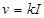
где v - скорость фильтрации, м/сут;
k - коэффициент фильтрации, м/сут;
I - градиент напора.
Основные расчетные формулы и таблицы приведены в рекомендуемом приложении 1.
При необходимости применения водопонижения в водоносных слоях, сложенных породами, отличающимися высокими фильтрационными свойствами (крупнообломочными, сильнотрещиноватыми и закарстованными), расчет водопонижения допускается основывать на опытных данных и уточнять в процессе поэтапного выполнения системы защиты.
2.8. Для условий повышенной сложности (неоднородного фильтрационного потока, сложных очертаний контуров питания и водопонижения и т.п.) расчет водопонизительных систем допускается производить с использованием моделирования или других методов.
2.9. Конструкции водопонизительных и наблюдательных скважин и дренажей следует принимать в соответствии с указаниями обязательного приложения 2.
ОТКРЫТЫЕ ВОДОПОНИЗИТЕЛЬНЫЕ СКВАЖИНЫ
2.10. Открытые (сообщающиеся с атмосферой) водопонизительные скважины следует предусматривать, как правило, для снижения уровня (или напора) подземных вод в наскальных породах с коэффициентом фильтрации не менее 2 м/сут и во всех других случаях, когда их эффективность подтверждается опытными данными.
2.11. При проектировании водопонизительных систем следует предусматривать открытые водопонизительные скважины в виде:
оборудованных насосами;
сквозных фильтров, через которые поступающие в них подземные воды из всех прорезаемых ими водоносных слоев сбрасываются в подземные выработки;
самоизливающихся с изливом воды через устье;
водопоглощающих, с помощью которых подземные воды из вышележащего слоя сбрасываются в нижележащий.
2.12. Скважины, оборудованные насосами, следует предусматривать для контурных и линейных водопонизительных систем, а также проектировать в виде отдельно расположенных водопонизительных устройств при открытой и подземной разработках месторождений полезных ископаемых и в виде распределенных по площади шахтного поля водопонизительных устройств при подземной разработке полезных ископаемых.
2.13. Сквозные фильтры следует предусматривать для контурных и линейных водопонизительных систем, а также в виде отдельно расположенных или распределенных по площади шахтного поля водопонизительных устройств при подземной разработке полезных ископаемых и при открытой разработке месторождений полезных ископаемых, когда технически возможно и экономически оправдано устройство подземных дренажных выработок.
2.14. Вертикальные самоизливающиеся скважины для снятия избыточного напора в нижележащих водоносных слоях следует предусматривать для предохранения от нарушения устойчивости горных пород и предотвращения опасных прорывов напорных вод в открытые или подземные горные выработки.
Забуривание самоизливающихся скважин следует производить с поверхности земли, с берм на бортах карьеров (разрезов), с подошвы открытых или подземных выработок. Скважина должна быть заглублена в наиболее водообильную зону водоносного слоя, содержащего напорные воды.
2.15. Горизонтальные самоизливающиеся скважины, устраиваемые с берм на откосах, следует предусматривать в подошве водоносных слоев вблизи их контакта с водоупорными слоями или в местах сосредоточенной фильтрации для предотвращения суффозионного выноса породы через откосы открытых выработок.
Горизонтальные скважины на откосах открытых выработок допускается предусматривать как вспомогательное средство при наружной водопонизительной системе из скважин, оборудованных насосами, или из сквозных фильтров (или при противофильтрационной завесе), а также в качестве одного из основных средств для поддержания со стороны постоянных бортов выработки пониженного уровня подземных вод, достигнутого с помощью других средств (например, открытого водоотлива).
2.16. В проекте следует предусматривать применение в подземных выработках самоизливающихся скважин (восстающих, нисходящих или горизонтальных - в зависимости от гидрогеологических условий) для усиления дренирующей способности самой выработки, а также для водопонижения в водоносных породах и слоях, отделенных от выработки водоупорными прослойками и слоями.
2.17. При горизонтальном залегании водоносных слоев допускается предусматривать использование для водопонижения лучевых водозаборов, состоящих из шахтных колодцев с установленными в них насосами, и забуриваемых из колодцев лучевых (радиальных), как правило, горизонтальных (а при необходимости - и наклонных) самоизливающихся скважин.
2.18. Водопоглощающие скважины следует предусматривать при залегании водопроницаемого слоя, имеющего высокую поглощающую способность, ниже осушаемого слоя.
ИГЛОФИЛЬТРЫ
2.19. В составе водопонизительных систем открытых и подземных выработок следует применять иглофильтры:
легкие, не имеющие индивидуальных водоподъемников и соединяющиеся с центральной насосной станцией общим (для группы иглофильтров) всасывающим коллектором;
эжекторные, снабженные каждый индивидуальными эжекторными водоподъемниками и соединенные с центральной насосной станцией общим (для группы иглофильтров) напорным и водоотводящим водоводами;
вакуум-концентрические, снабженные каждый индивидуальными эжекторными водоподъемниками и соединенные с центральной насосной станцией напорным и водоотводящим водоводами.
2.20. Легкие иглофильтровые установки (гравитационного водопонижения (типа ЛИУ) следует применять в основном в составе внутрикарьерных систем защиты (а при необходимости - и в подземных выработках) при требуемой глубине понижения уровня подземных вод до 4 - 5 м (или на большую глубину - с применением ярусных систем) в горных породах с коэффициентами фильтрации 5 - 50 м/сут - без обсыпки вокруг иглофильтров, 2 - 5 м/сут - с песчано-гравийной обсыпкой вокруг иглофильтров на всю высоту водоносного слоя.
2.21. Легкие иглофильтровые установки вакуумного водопонижения (типов УВВ, УВЗМ и др.), эжекторные иглофильтровые установки (типа ЭИ) и установки с вакуум-концентрическими водоприемниками (типа ЭВВУ) следует применять, как правило, для водопонижения в горных породах с коэффициентом фильтрации менее 2 м/сут.
2.22. В проекте следует предусматривать погружение легких и эжекторных иглофильтров, как правило, гидравлическим способом; при необходимости пересечения легкими и эжекторными иглофильтрами трудноразмываемых пород и во всех случаях погружения в осушаемую толщу вакуум-концентрических водоприемников для них следует предусматривать бурение скважин.
В качестве материала обсыпки иглофильтров следует применять песок с частицами диаметром 0,5 - 2 мм.
2.23. Размещение иглофильтров следует проектировать в виде контурных или линейных систем.
2.24. При проектировании иглофильтровых систем для работы в условиях отрицательных температур воздуха следует предусматривать утепление трубопроводов и насосных станций.
2.25. При проектировании электроснабжения иглофильтровых установок необходимо соблюдать те же требования, что и для скважинных насосов (см. обязательное приложение 2).
ДРЕНАЖ
2.26. В проектах систем защиты горных выработок от подземных вод следует предусматривать применение пластовых, траншейных, трубчатых дренажей и подземных дренажных выработок (галерейных дренажей).
2.27. Пластовые дренажи следует предусматривать в открытых выработках для предотвращения суффозионного выноса и разрушения горных пород, когда нельзя или экономически нецелесообразно полностью предотвратить высачивание подземных вод через откосы, а также для дренирования внутренних отвалов.
Необходимость дренажа отвалов и его конструктивное решение устанавливаются совместно с решением технологии отвалообразования и организацией поверхностного стока, с учетом характера пород в основании отвалов и других местных условий.
2.28. Траншейные дренажи (открытые траншеи и канавы) допускается применять в качестве наружных водопонизительных устройств (в основном линейных) в верхних водоносных слоях, в виде передовых траншей - при вскрытии месторождения открытым способом без наружных водопонизительных устройств и в вида канав на бермах (площадках) бортов карьера (разреза).
Канавы на бермах внутри карьера (разреза) следует одновременно использовать для отвода поверхностных вод. Сечение канав должно удовлетворять требованиям разд. 5.
Воду, собирающуюся в траншеях и канавах, необходимо отводить самотеком за пределы карьерного поля к месту сброса рудничных вод или к карьерным водосборникам по внутрикарьерной водосточной сети.
2.29. Трубчатый дренаж следует предусматривать при протяженной по фронту борта карьера (разреза) линии высачивания подземных вод на откосы в малоустойчивых породах, залегающих над водоупором.
Трубчатый дренаж необходимо врезать в водоупорные слои, с тем чтобы полностью перехватить поток подземных вод над водоупором.
2.30. Подземные дренажные выработки (галерейный дренаж) проходного и полупроходного сечений следует применять для непосредственного дренирования окружающей их толщи пород или для водопонижения в выше- и нижележащих водоносных слоях с помощью сквозных фильтров и забуриваемых из самих выработок водопонизительных скважин, работающих как самоизливающиеся или как вакуумные (см. п. 2.32), а при необходимости и оборудуемых индивидуальными насосами.
При подземной разработке полезных ископаемых допускается в качестве дренажных предусматривать использование основных горных выработок, в которых для этого должны быть запроектированы канавки или лотки для стока воды.
В подземных дренажных выработках (и в основных выработках, используемых в качестве дренажных) следует предусматривать ходки для сбойки со сквозными фильтрами и ниши для забуривания водопонизительных скважин, если проектируется их применение.
Подземные дренажные выработки допускается проектировать для защиты как шахтного, так и карьерного поля, применяя их во внешних (кольцевых, неполнокольцевых и линейных) водопонизительных системах или располагая в виде систематического дренажа ниже открытых выработок или в системе горных выработок шахтного поля.
В подземных дренажных выработках, в которых будут производиться эксплуатационные работы (надзор за сквозными фильтрами, бурение восстающих скважин и т. п.) следует предусматривать сигнализацию для оповещения находящихся в них людей в случае аварии в системе водоотлива и при необходимости телефонную связь с диспетчерским пунктом.
При проектировании дренажных выработок необходимо соблюдать требования СНиП II-94-80.
ВАКУУМНОЕ ВОДОПОНИЖЕНИЕ
2.31. Вакуумное водопонижение следует предусматривать для снижения уровня подземных вод в горных породах с коэффициентами фильтрации 0,1 - 2 м/сут и для полного перехвата притока подземных вод к горным выработкам (понижения до водоупора).
2.32. Вакуумное водопонижение следует проектировать с применением вакуумных скважин с погружными насосами, эжекторных иглофильтров, вакуум-концентрических скважин и легких иглофильтровых установок вакуумного водопонижения, а также забуриваемых из подземных выработок водопонизительных скважин с подключением к ним агрегатов и коллекторов установок вакуумного водопонижения или других вакуумных систем.
2.33. При проектировании вакуумного водопонижения следует учитывать повышенную опасность выноса в скважины и иглофильтры мелких частиц из осушаемых горных пород и предусматривать во всех случаях песчано-гравийную обсыпку фильтров, удовлетворяющую требованиям обязательного приложения 2, с применением при необходимости корзинчатых и кожуховых фильтров.
2.34. Фильтры скважин в открытых горных выработках для предотвращения чрезмерно большого поступления воздуха следует размещать на расстоянии от откосов не менее толщины осушаемого слоя. При соответствующем обосновании это расстояние может быть сокращено.
Около верхних участков надфильтровых труб следует устраивать тампоны из уплотненного слабопроницаемого грунта (суглинков, глин).
2.35. При проектировании вакуумных систем для создания требуемого понижения уровня подземных вод в случае залегания водоупора, близкого к подошве горной выработки, и для полного перехвата притока подземных вод к совершенным по степени вскрытия водоносного слоя выработкам фильтры следует размещать непосредственно у кровли водоупора.
При необходимости снижения напоров в водоносных слоях слоистой толщи или для полного их осушения в зоне, прилегающей к выработке, фильтры скважины следует размещать в пределах всех слоев, подлежащих осушению.
2.36. Системы из вакуумных скважин в однородном водоносном слое следует предусматривать при требуемом снижении уровня подземных вод до 20 м. При слоистом сложении осушаемой толщи (наличии в ней ряда водоносных слоев, разобщенных водоупорными слоями), а также в закрытых (ограниченных непроницаемыми контурами) слоях допускается применять вакуумные скважины глубиной до 100 м и более.
2.37. Минимальный уровень воды в вакуумной скважине должен обеспечивать затопление насоса, достаточное для его работы без срыва откачки, в соответствии с требованиями завода-изготовителя и с учетом вакуума над динамическим уровнем воды в скважине. Максимальный уровень должен соответствовать проектному напору в скважине.
2.38. Установки с эжекторными иглофильтрами допускается предусматривать в проекте для вакуумного водопонижения при понижении уровня подземных вод до 12 м (при надлежащем обосновании - до 20 м), считая от уровня монтажа установки.
2.39. Установки из вакуум-концентрических скважин с эжекторными водоподъемниками следует предусматривать для осушения слоистых толщ, представленных водоносными слоями, разобщенными суглинистыми или глинистыми прослоями, в пределах глубин водопонижения до 20 м.
2.40. Легкие иглофильтровые установки вакуумного водопонижения следует предусматривать для осушения безнапорных и напорных водоносных слоев при понижении уровня подземных вод до 6 - 7 м от уровня монтажа установки. При необходимости понижения уровня подземных вод на большую глубину допускается проектировать ярусные водопонизительные системы с использованием установок типа УВВ.
Установки вакуумного водопонижения допускается предусматривать в качестве вспомогательного средства при вскрытии открытых выработок и для отбора воды и воздуха из скважин, забуриваемых из подземных горных выработок.
2.41. При проектировании осушения песчано-глинистых пород с коэффициентом фильтрации до 2 м/сут длину иглофильтров установок типа УВВ следует предусматривать не более 7,5 м, в породах с коэффициентом фильтрации свыше 2 м/сут - 8,5 - 9 м.
2.42. Расчет вакуумного водопонижения необходимо производить с учетом неустановившейся фильтрации воды при постоянном напоре.
Приток воздуха к скважине (иглофильтрам) допускается определять по формулам установившейся его фильтрации.
НАБЛЮДАТЕЛЬНЫЕ СКВАЖИНЫ
2.43. При проектировании размещения наблюдательных скважин необходимо учитывать, что наблюдения за режимом и характеристиками подземных вод должны охватывать всю территорию, на которой возможно влияние водопонижения в течение всего расчетного срока эксплуатации месторождения.
2.44. При наличии в районе наблюдений нескольких осушаемых водоносных слоев наблюдательные скважины, отдельные пьезометры или датчики уровня необходимо предусматривать во всех слоях. Следует предусматривать наружную изоляцию каждого пьезометра (или датчика уровня), установленного на определенной отметке, от других горизонтов и водоносных слоев. Должна быть обеспечена возможность отбора проб подземных вод на химический анализ с различных по высоте уровней водоносных слоев.
2.45. Наблюдательные скважины следует предусматривать во всех расчетных точках, где понижение уровня подземных вод принималось в качестве исходной величины или определялось расчетом.
Наблюдательные скважины следует размещать на участках с характерными гидрогеологическими условиями, учитывая расположение источников загрязнения (хвостохранилищ, гидроотвалов и др.), питания и разгрузки (поверхностных водотоков, водоемов и др.) подземных вод.
При относительно простых гидрогеологических условиях допускается размещать наблюдательные скважины по створам (лучам).
Лучи наблюдательных скважин следует назначать:
при пологозалегающих водоносных слоях - по направлению потока и в крест потока (природного), в направлении наиболее вероятных областей питания и соседних систем водопонижения (водоснабжения, водоотлива);
при крутопадающих водоносных слоях - по простиранию и в крест простирания слоев, в направлении вероятных источников питания и соседних систем водопонижения (водоснабжения, водоотлива);
при протяженных (линейных) системах - перпендикулярно оси системы.
В проекте контурной водопонизительной системы следует предусматривать не менее двух лучей наблюдательных скважин и принимать не менее двух скважин на луче, из которых одна - на контуре, а вторая - вне его в выбранной расчетной точке.
При больших размерах зоны влияния контурной водопонизительной системы число скважин на луче в интересующем водоносном слое следует принимать от трех до пяти, располагая первую на контуре.
3. ВОДООТЛИВ ИЗ ГОРНЫХ ВЫРАБОТОК
3.1. В проектах систем защиты следует предусматривать устройство насосных станций для откачки воды непосредственно из горных выработок, когда невозможно или нецелесообразно отвести поступающую в них воду самотеком.
3.2. При проектировании следует различать нормальный и максимальный притоки к насосным станциям.
Нормальный приток к насосным станциям слагается из притока подземных вод, определяемого на основании гидрогеологических расчетов, и систематически расходуемой в горных выработках воды на технологические и бытовые нужды (пылеподавление, гидромеханизацию и др.).
Максимальный приток к насосным станциям определяется суммированием величин нормального притока и определяемого в соответствии с указаниями разд. 5 притока поверхностных вод, образующихся за счет атмосферных осадков, выпадающих непосредственно на площадь карьера или шахтного поля.
3.3. Насосные станции с суммарной мощностью рабочего и резервных насосов свыше 100 кВт следует проектировать, как правило, в блоке с электроподстанциями.
3.4. В проектах следует предусматривать главные, участковые и перекачные насосные станции, а на период их строительства - временные. Кроме того, необходимо предусматривать передвижные или переносные насосные установки для использования их в призабойных и других местах по мере необходимости.
3.5. Напорные трубопроводы должны быть рассчитаны на полную производительность насосной станции.
В пределах горных выработок для насосных станций следует предусматривать, как правило, не менее двух напорных трубопроводов. Один напорный трубопровод допускается предусматривать для участковых насосных станций, а также для главной карьерной насосной станции в случае возможности подтопления нижнего горизонта.
При наличии более одного напорного трубопровода откачка нормального притока должна обеспечиваться при отключении одного из них.
3.6. Размещение на напорных и всасывающих трубопроводах запорной арматуры должно обеспечивать возможность замены или ремонта любого из насосов, обратных клапанов, а также основной запорной арматуры с обеспечением непрерывной откачки нормального притока и работы каждого насоса на любой напорный трубопровод.
Скорость воды во всасывающем и напорном трубопроводах, как правило, не должна превышать соответственно 1,5 и 3 м/с.
3.7. При проектировании водоотливных сооружений следует применять технологические схемы и оборудование, позволяющие механизировать монтажные работы и очистку емкостей (водосборников, осветлителей, зумпфов, канавок и т.п.).
ВОДООТЛИВ ИЗ ОТКРЫТЫХ ВЫРАБОТОК
3.8. В проекте должно быть предусмотрено устройство сети водостоков и сбросных линий для сбора и организованного отвода поступающих в выработки подземных и поверхностных вод к водосборникам и зумпфам у насосных станций. Водостоки и сбросные линии должны быть рассчитаны на максимальный притоки и отвечать требованиям разд. 5.
3.9. Главные насосные станции (стационарные или плавучие) с водосборниками следует располагать с учетом погоризонтных притоков подземных вод, площади водосбора поверхностных вод и обеспечения минимальных затрат на водоотлив.
3.10. Участковые насосные станции (стационарные, передвижные, плавучие) с водосборниками, откачивающие воду непосредственно во внешние водоотводящие устройства или в водосборники главных насосных станций, следует проектировать для обслуживания отдельных участков карьера (разреза).
3.11. Передвижные или переносные насосные установки с зумпфами допускается предусматривать для откачки воды из отдельных изолированных участков выработки.
Необходимость перекачных насосных станций в карьере (разрезе) устанавливается при выборе общей схемы карьерного водоотлива и выполнении соответствующих технико-экономических расчетов.
3.12. Вместимость карьерных водосборников, для которых по возможности необходимо использовать выработанное пространство, у главной и каждой участковой насосных станций должна быть, как правило, равна объему расчетного стока с соответствующей водосборной площади (см. разд. 5) за вычетом объема воды, откачиваемой за время наполнения водосборника.
В случае невозможности выполнения этого требования в проекте должны быть предусмотрены необходимые мероприятия, позволяющие временное затопление нижних рабочих горизонтов, и водосборники вместимостью, равной не менее чем 3-часовому нормальному притоку.
Вместимость зумпфов следует принимать не менее 5-минутной максимальной подачи одного из насосов.
В водосборниках должны быть предусмотрены отстойники для осветления воды и возможность их периодической очистки.
3.13. Карьерный водоотлив в качестве основного средства защиты карьера (разреза) допускается предусматривать при соблюдении требований пп. 3.10 - 3.12 в следующих случаях:
в скальных и полускальных породах, когда организация сбора и удаления поступающих в выработку подземных вод не вызывает осложнений при принятых методах и системах разработки месторождения;
в наскальных породах в период строительства или углубки карьера (разреза) при ведении горных работ с передовыми траншеями, заглубляемыми ниже горизонта выработок, при подводной разработке пород и в других случаях, когда это не вызывает осложнений для принятых способов разработки месторождений.
3.14. Скорость снижения уровня воды в выработках в наскальных породах (при их разработке или осушении) следует предусматривать не более значений, приведенных в табл. 1
Таблица 1
|
Допускаемая скорость, см/сут, снижения в выработке уровня воды при его глубине от непониженного уровня подземных вод, м |
||||
|
до 5 |
5 - 10 |
10 - 20 |
св. 20 |
|
|
До 2 |
30 |
25 |
20 |
15 |
|
2 - 10 |
60 |
40 |
30 |
25 |
|
10 - 20 |
100 |
70 |
50 |
40 |
|
Св. 20 |
120 |
90 |
60 |
50 |
3.15. При разработке пород средствами гидромеханизации откачку подземных и поверхностных вод полностью или частично допускается предусматривать землесосами, откачивающими пульпу.
В забое гидромеханической разработки проектом может допускаться повышенная фильтрация подземных вод через откосы выработки, способствующая разрушению разрабатываемой породы и не создающая угрозы общей устойчивости бортов карьера (разреза).
3.16. При подтоплении нижних рабочих горизонтов (см. п. 3.12), а также при невозможности обеспечить допустимую высоту всасывания насосов при их стационарной установке главные и участковые насосные станции следует предусматривать плавучими.
3.17. Число рабочих насосов на главных и участковых насосных станциях следует определять в соответствии с требованиями «Единых правил безопасности при разработке месторождений полезных ископаемых открытым способом», утвержденных Госгортехнадзором СССР.
При откачке максимальных притоков должна предусматриваться непрерывная работа всех рабочих насосов.
Число рабочих насосов на передвижных, переносных и временных насосных станциях следует принимать из расчета непрерывной откачки нормального притока.
3.18. При надлежащем обосновании допускается предусматривать сброс осветленной воды в подземную дренажную систему или в водопоглощающие слои (с учетом требований разд. 6). Сброс должен производиться через скважины, число которых определяется расчетом, при этом резервные сбросные скважины должны составлять 25 % общего числа.
Сброс карьерных вод в подземную дренажную систему должен регулироваться и соответствовать производительности подземной насосной станции.
3.19. При проектировании насосных станций в открытых горных выработках необходимо соблюдать требования СНиП 2.04.03-85 в части числа резервных насосов, ширины проходов между выступающими частями насосов, трубопроводов и двигателей, укладки всасывающих трубопроводов, размеров машинного зала и монтажных площадок, габаритов подъемно-транспортного оборудования.
ВОДООТЛИВ ИЗ ПОДЗЕМНЫХ ВЫРАБОТОК
3.20. Схему стационарных водоотливных установок необходимо принимать в зависимости от одновременно действующих приточных горизонтов, глубины их залегания, размера шахтного (карьерного) поля, величины притоков подземных, технологических и поверхностных вод.
3.21. Главные насосные станции следует располагать у стволов с наиболее низкими отметками околоствольных дворов.
При большой протяженности горных выработок и когда необходимо по условиям водоотвода допускается дополнительно предусматривать участковые стационарные насосные станции.
3.22. Число рабочих насосов и их общее число с учетом резервных и находящихся в ремонте в подземных насосных станциях необходимо определять исходя из нормального притока и в соответствии с требованиями «Единых правил безопасности при разработке рудных, нерудных и россыпных месторождений подземным способом», утвержденных Госгортехнадзором СССР, и «Правил безопасности в угольных и сланцевых шахтах», утвержденных Минуглепромом СССР и Госгортехнадзором СССР.
Откачку максимального притока следует предусматривать с учетом регулирования сброса карьерных вод в подземную дренажную систему (см. п. 3.18).
3.23. Главные и участковые насосные станции следует проектировать незаглубленного типа (корпуса насосов располагаются выше уровня воды в водосборнике) с обратными клапанами на всасывающих трубопроводах при - диаметре до 200 мм, с установкой вакуум-насосов или подкачивающих насосов и заглубленного типа (корпуса насосов располагаются ниже уровня воды в водосборнике) - при диаметре свыше 200 мм. При этом заглубленные насосные станции следует предусматривать, как правило, в слаботрещиноватых скальных породах при пределе прочности на одноосное сжатие в водонасыщенном состоянии свыше 80 МПа и притоках свыше 1000 м3/ч.
(Измененная редакция. Изм. № 1).
3.24. При проектировании насосных станций и электроподстанций в водоносных породах необходимо предусматривать дренаж или гидроизоляцию и тампонаж окружающих пород
3.25. В камерах заглубленных насосных станций необходимо предусматривать раздельные каналы, перекрытые съемными щитами, для прокладки трубопроводов и кабелей, приямки и насосы для откачки вод капежа, а также вод при авариях внутри насосных станций.
3.26. Пол камеры незаглубленной насосной станции следует принимать не менее чем на 0,5 м выше уровня головки рельсов в околоствольном дворе.
3.27. При числе насосов свыше 10 допускается устанавливать два электрических крана для транспортирования и монтажа оборудования, при этом доставку оборудования в насосную следует осуществлять с двух противоположных сторон камеры.
3.28. Водозаборные колодцы допускаются индивидуальные для каждого насоса и групповые.
При числе насосных агрегатов в насосной станции свыше трех общее число колодцев должно быть не менее двух.
3.29. При определении вместимости водосборников следует учитывать вместимость предусмотренных в проекте дренажных выработок, временное заполнение которых водой не вызовет подтопления основных выработок. Суммарная вместимость водосборников должна соответствовать требованиям нормативных документов, указанных в п. 3.22, и СНиП II-94-80.
3.30. При значительных притоках воды (свыше 5 тыс. м3/ч) в качестве основной емкости водосборников допускается использовать специальные выработки, которые следует проводить параллельно основным горным выработкам на более низких отметках. Как правило, кровля выработки-водосборника должна быть на уровне почвы основной выработки. Уклоны выработок необходимо выбирать с таким расчетом, чтобы вода по сбойкам могла поступать на главные откаточные выработки только после затопления всех водосборников.
В местах сопряжения выработки-водосборника с коллектором насосной станции следует сооружать глухую герметическую перемычку с водопропускными трубами и регулирующими задвижками.
3.31. Все выходы из насосных станций в околоствольный двор следует предусматривать с герметическими дверями, рассчитанными на давление 0,1 МПа (1 кгс/см3).
3.32. Для подземных насосных станций при неагрессивной воде в проектах следует предусматривать обычные центробежные насосы. При наличии подземных кислотных вод (рН < 5) следует предусматривать установку насосов, арматуры, трубопроводов и аппаратуры автоматического управления из кислотостойких материалов.
3.33. Каждый насос временных и стационарных насосных станций должен иметь отдельный всасывающий трубопровод и должен быть снабжен соответствующими измерительными приборами (манометром, вакуумметром) для определения давления во всасывающем и напорном патрубках.
3.34. Напорные трубопроводы следует располагать, как правило, в стволе, оборудованном клетевым подъемником или имеющем лестничное отделение.
Запрещается прокладка в стволах напорных трубопроводов против торцевых сторон клети.
При числе напорных трубопроводов свыше четырех (диаметром свыше 300 мм) их следует прокладывать в специальных трубно-кабельных выработках.
3.35. Для гашения гидравлических ударов на напорных трубопроводах необходимо предусматривать установку обратных клапанов или других защитных устройств.
Расчет по прочности стенок трубопроводов и металлоконструкций опор следует производить (с учетом возможного гидравлического удара) на двухкратную величину гидростатического напора.
Напорные трубопроводы в пределах насосной и трубного ходка - до ствола (или трубного восстающего) следует закреплять на специальных опорах, способных предотвратить смещение и обрушение труб при возникновении гидравлического удара.
3.36. При размещении насосной станции на глубине свыше 200 м от поверхности земли на напорных трубопроводах необходимо предусматривать температурные компенсаторы. Верхний компенсатор следует предусматривать на глубине более 20 м от поверхности.
3.37. Зумпфовые насосные станции должны быть оборудованы двумя насосными агрегатами - рабочим и резервным.
3.38. При проектировании камер и водосборников временных насосных станций следует соблюдать те же требования, что и при проектировании соответствующих камер стационарных водоотливных комплексов.
3.39. Временные насосные станции для строительства околоствольных дворов и главных откаточных выработок следует сооружать вблизи стволов в выработках, проходящих в направлении основных подземных водотоков.
Временные насосные станции следует проектировать, как правило, незаглубленного типа.
3.40. При проходке шахтного ствола следует предусматривать водоотлив из него подвесным насосом, а при необходимости (при глубине ствола свыше 250 м) - устройство перекачных насосных станций.
3.41. Приток подземных вод к стволу не закрепленному постоянной крепью, при отсутствии наружной водопонизительной системы и противофильтрационных устройств следует определять из условия понижения уровня подземных вод у стенки выработки на всю мощность каждого прорезаемого стволом водоносного слоя.
3.42. Допускаемый приток подземных вод в забой стволов следует принимать для принятого способа проходки в соответствии с требованиями СНиП 3.02.03-84.
3.43. При проектировании внешней водопонизительной системы или противофильтрационной завесы следует учитывать, что остаточный приток в забой ствола не должен превышать 8 м3/ч.
3.44. В проекте должны быть предусмотрены улавливающие устройства для сбора подземных вод, поступающих через стенки ствола, и отвода их к зумпфам.
3.45. Перекачные насосные станции следует предусматривать с учетом их использования как при сооружении стволов, так и в последующие периоды строительства, а при необходимости - и эксплуатации горного предприятия.
При определении размеров камер перекачных насосных станций в стволах глубиной свыше 600 м следует учитывать размещение запаса силовых и контрольных кабелей, обеспечивающих работу подвесного насоса.
Водосборник перекачных насосных станций следует отделять от камеры железобетонной перемычкой и разделять перегородкой на два отсека.
3.46. Перекачные насосные станции в стволах необходимо предусматривать независимо от способа их проходки; их число, срок службы, расстояние между ними следует определять исходя из схемы водоотлива (постоянного или временного), глубины ствола и принятого насосного оборудования.
3.47. При проектировании подземных насосных станций кроме настоящих норм и правил безопасности (см. п. 3.22) следует соблюдать требования СНиП II-94-80.
АВТОМАТИЗАЦИЯ, ДИСПЕТЧЕРИЗАЦИЯ,
СИГНАЛИЗАЦИЯ, СВЯЗЬ
3.48. При проектировании автоматизации, диспетчеризации, сигнализации и связи постоянных и временных насосных станций необходимо соблюдать требования нормативных документов, указанных в пп. 3.17 и 3.22, и Правил устройства электроустановок (ПУЭ), утвержденных Минэнерго СССР.
На насосных станциях необходимо предусматривать автоматическое включение и отключение насосных агрегатов в зависимости от уровня воды в водосборнике или зумпфе, автоматическое включение резервного насосного агрегата при выходе из строя любого из рабочих насосов.
3.49. При проектировании автоматизации следует, как правило, использовать комплекты аппаратуры, серийно выпускаемые промышленностью.
Для автоматизированных насосных станций необходимо предусматривать также пуск, остановку и контроль работы насосных агрегатов из диспетчерских пунктов (ДП), располагаемых, как правило, на поверхности, и предусматривать передачу на ДП сигналов об авариях.
Проекты диспетчеризации следует выполнять с учетом возможного использования телеизмерений основных параметров (расхода, напора), характеризующих работу водоотлива в целом.
Для всех водоотливных установок независимо от их автоматизации следует предусматривать посты местного управления для проведения ремонтных и наладочных работ.
3.50. Питание сигнальных устройств и связи следует предусматривать от двух независимых источников энергии.
ЭЛЕКТРОСНАБЖЕНИЕ, ЭЛЕКТРООБОРУДОВАНИЕ,
ОСВЕЩЕНИЕ
3.51. Проектирование электроснабжения и освещения, выбор электрооборудования насосных станций следует выполнять в соответствии с требованиями нормативных документов, указанных в п. 3.48, и с учетом перспективного развития горного предприятия не менее чем на ближайшие 10 лет.
3.52. Электроснабжение следует проектировать в соответствии с классификацией электроприемников по категории обеспечения надежности питания:
главные насосные станции - I категория;
участковые насосные станции и передвижные насосные установки с притоком свыше 50 м3/ч - II категория;
то же, до 50 м3/ч - III категория;
зумпфовые насосные станции - II категория;
временные насосные станции - I категория;
освещение дренажных выработок - III категория.
Питание подстанции при главной насосной станции необходимо предусматривать не менее чем по двум фидерам; при отключении одного из питающих фидеров остающиеся должны обеспечивать работу насосов при откачке максимального притока.
4. ПРОТИВОФИЛЬТРАЦИОННЫЕ ЗАВЕСЫ
4.1. В системах защиты горных выработок следует предусматривать противофильтрационные завесы: свайные, траншейные, тонкие щелевые, инъекционные, льдопородные.
4.2. Выбор типа и параметров противофильтрационной завесы следует производить исходя из инженерно-геологических и гидрогеологических условий в районе защищаемого от подземных вод объекта, результатов фильтрационных расчетов (исследований) и при необходимости - расчетов на силовые воздействия.
4.3. Завесы, как правило, должны полностью прорезать водоносные породы и заглубляться в водоупорные породы на глубину, определяемую характером контактной зоны, состоянием водоупорных пород и действующим напором на завесу, но не менее чем на 1 м при хорошо выраженной границе слоев.
Применение несовершенных (не доходящих до водоупора) завес должно быть обосновано фильтрационными и технико-экономическими расчетами.
4.4. При проектировании противофильтрационных завес необходимо обосновывать расчетами фильтрационную устойчивость завесы, ее сохранность (прочность) на протяжении всего проектного срока службы и устойчивость воспринимающего напор на завесу массива горных пород.
4.5. Притоки подземных вод через завесу, доведенную до водоупора, допускается определять по формулам рекомендуемого приложения 1 исходя из величины перепада напора с верховой и низовой сторон противофильтрационной завесы HS, м, определяемого по формуле
 Hs = ts Ia, (3)
Hs = ts Ia, (3)
где ts - толщина противофильтрационной завесы, м;
Ia - допускаемый градиент напора на завесу, определяемый, как правило, по экспериментальным данным.
При сложных гидрогеологических условиях площадки строительства или сложных очертаниях выработок параметры фильтрационного потока следует определять экспериментальным путем или моделированием.
Фильтрационные расчеты завес следует уточнять по данным опытно-производственных работ (см. п. 1.6).
В проекте следует предусматривать прием подземных вод, фильтрующихся через завесу, внутрикарьерными (внутришахтными) водопонизительными устройствами и водостоками.
4.6. Для наблюдений за перепадом напора на завесе в проекте следует предусматривать устройство пьезометрических скважин с обеих сторон завесы.
СВАЙНЫЕ, ТРАНШЕЙНЫЕ И ТОНКИЕ ЦЕЛЕВЫЕ ЗАВЕСЫ
4.7. Свайные, траншейные и тонкие целевые завесы следует проектировать в виде контурных и линейных схем, как правило, для защиты открытых выработок от притока подземных вод.
4.8. Свайные завесы из пересекающихся набивных свай следует предусматривать в наскальных горных породах, в том числе содержащих крупнообломочные включения, на глубину до 40 - 50 м.
При надлежащем обосновании допускается устройство свайной завесы из примыкающих одна к другой свай, устраиваемых в направляющих трубах-фиксаторах.
4.9. Буронабивные сваи для завес следует предусматривать диаметром 0,5 - 1,0 м из твердеющих материалов (бетона или глиноцементного раствора).
4.10. Расстояние между центрами пересекающихся свай завесы следует принимать не более 0,7 - 0,8 диаметра свай.
Расчетная толщина свайной завесы принимается по толщине на стыке свай.
4.11. Траншейные секционные и непрерывные завесы следует проектировать в наскальных горных породах без крупнообломочных включений с применением твердеющих (бетона, глиноцементного раствора) и нетвердеющих (глины, заглинизированного грунта) материалов для глубин до 40 - 50 м.
4.12. Толщину траншейных завес допускается принимать в пределах 0,5 - 1,0 м при использовании специального оборудования и до 2,0 - 2,5 м - при использовании землеройных машин общего назначения.
4.13. При проектировании следует предусматривать разработку траншей и бурение скважин для траншейных и свайных завес, как правило, под защитой глинистого раствора, обеспечивающего устойчивость стен от обрушения и удовлетворяющего требованиям СНиП 3.02.01-83.
4.14. Для глинистых растворов следует предусматривать, как правило, бентонитовые глины, при их отсутствии - местные, имеющие число пластичности не менее 0,2, с содержанием частиц размером крупнее 0,05 мм - не более 10 % и мельче 0,005 мм - не менее 30 % по массе. Допускается предусматривать смеси бентонитовых и местных глин.
Пригодность местных глин должна быть подтверждена лабораторными испытаниями глинистых растворов.
Вода для глинистых растворов не должна вызывать их коагуляцию и должна удовлетворять техническим требованиям приготовления бетона.
4.15. Тонкие щелевые завесы (5 - 20 см), устраиваемые путем заполнения твердеющим материалом (глиноцементным раствором) щели, образованной с помощью плоского металлического элемента или водяной струи, следует предусматривать в песчаных и глинистых горных породах без крупнообломочных включений на глубину до 20 м.
4.16. В проекте следует предусматривать для свайных, траншейных и тонких щелевых завес материалы, удовлетворяющие следующим требованиям:
бетон - подвижность 16 - 20 см (по осадке стандартного конуса); класс по прочности на сжатие не ниже В15; марка по водопроницаемости не ниже W2; марка по морозостойкости не ниже F50;
глиноцементный раствор - плотность 1,5 - 1,7 г/см3; прочность на сжатие затвердевшего раствора не ниже 1,5 МПа (15 кгс/см2); выход камня при затвердении не менее 98 %; стабильность не более 0,5 г/см3; показатель расплыва - в пределах, позволяющих вести перекачку его от растворного узла к месту укладки;
глина - преимущественно комовой структуры (размер комьев от 10 см до 1/3 ширины траншеи); консистенция от твердой до тугопластичной;
заглинизированный грунт (грунт, разработанный (по проходке траншей и обогащенный глинистым раствором) - содержание (по массе) глинистых частиц с равномерным их распределением по всему объему смеси - не менее 10 - 15 %; консистенция, обеспечивающая качественную укладку его в траншею.
Коэффициент фильтрации твердеющих и пластичных заполнителей завес не должен превышать 0,005 м/сут. Градиенты напора на завесу при отсутствии специальных экспериментальных данных допускается принимать по табл. 2.
Таблица 2
|
Допускаемый градиент напора |
|
|
Твердеющий: |
|
|
глиноцементный раствор |
100 |
|
бетон |
105 |
|
Нетвердеющий: |
|
|
заглинизированный грунт |
20 |
|
комовая глина |
30 |
4.17. Жесткие завесы из твердеющих материалов должны быть рассчитаны на усилия от воздействия гидростатического давления как плита на упругом основании с изменяющимся по глубине коэффициентом податливости.
4.18. При соответствующем обосновании в качестве противофильтрационного материала завес допускается предусматривать синтетическую пленку, укладываемую из отдельных полос с низовой стороны траншеи.
В проекте завесы с применением пленки следует предусматривать грунтовый заполнитель, не содержащий включений с острыми углами, и его укладку с принятием мер против повреждения пленки.
4.19. В проекте необходимо предусматривать контроль качества материалов и работ с определением свойств глинистой суспензии и материал тела завесы, контроль правильности геометрических размеров разрабатываемой траншеи (щели), ее вертикальности, а также сплошности и сопряжения с водоупором с применением геофизических методов.
4.20. Противофильтрационные свойства завесы определяются исследованием водопроницаемости образцов, выбуриваемых из тела завесы, и на основании данных наблюдений за пьезометрическими скважинами у передней и задней граней завесы.
ИНЪЕКЦИОННЫЕ ЗАВЕСЫ
4.21. Инъекционные завесы (тампонаж горных пород) следует предусматривать для защиты вертикальных, наклонных и горизонтальных подземных выработок от подземных вод.
При надлежащем обосновании допускается предусматривать инъекционные завесы (линейные и контурные) для защиты от подземных вод открытых горных выработок.
В зависимости от геологических и гидрогеологических условий залегания водоносных пород допускается проектировать инъекционные завесы в сочетании со свайными или траншейными.
Допускается предусматривать инъекционные завесы для закрепления горных пород и придания им водонепроницаемости на отдельных участках горных выработок.
4.22. При проектировании следует предусматривать устройство инъекционных завес и тампонаж горных пород на отдельных участках выработок с применением цементации, глинизации, смолизации и силикатизации.
4.23. Цементацию (инъекцию цементных, глиноцементных и глиноцементно-песчаных растворов), как правило, следует применять для устройства завес в скальных трещиноватых породах с раскрытием трещин свыше 0,10 мм, свободных от заполнения или же заполненных легко поддающимися промывке вторичными материалами, при скорости движения подземных вод по трещинам не более 600 м/сут. При большей скорости применение цементации должно быть обосновано опытным путем.
Допускается предусматривать применение цементации в гравийно-галечниковых и песчаных водоносных породах с коэффициентом фильтрации свыше 50 м/сут.
4.24. Выбор состава и консистенции раствора при цементации следует производить в зависимости от назначения инъекционной завесы, состояния и инженерно-геологических свойств закрепляемых пород, их трещиноватости и закарстованности, а также химического состава подземных вод.
4.25. Для приготовления цементных растворов следует предусматривать портландцемент марки не ниже 300. Допускается использование сульфатостойкого цемента, шлакопортландцемента и тампонажного портландцемента. При наличии агрессивных вод следует предусматривать цементы, стойкие по отношению к подземным водам.
4.26. Глинизацию (инъекцию глиносиликатных растворов) следует предусматривать в случаях, когда цементация неэкономична или ненадежна из-за наличия агрессивных вод, способных корродировать цемент.
4.27. Смолизацию (инъекцию растворов синтетических смол с отвердителем) следует предусматривать для устройства завес в песчаных (с коэффициентами фильтрации 0,2 - 50 м/сут) и в скальных тонкотрещиноватых и пористых горных породах.
4.28. Силикатизацию (инъекцию двух или одного химических растворов) следует предусматривать для устройства завес в песчаных породах. При этом в песках с коэффициентами фильтрации 2 - 80 м/сут следует предусматривать поочередно нагнетание в поры пород растворов силиката натрия и хлористого кальция, в мелких песках с коэффициентом фильтрации 0,5 - 2,0 м/сут - одного раствора силиката натрия с добавкой фосфорной или кремнефтористо-водородной кислоты.
4.29. Допускается предусматривать комбинированное применение цементации, глинизации, смолизации и силикатизации.
4.30. Допускаемый градиент напора Ia на инъекционную завесу и ее фильтрационную характеристику при отсутствии специальных экспериментальных данных допускается принимать в зависимости от задаваемой в проекте величины удельного водопоглощения закрепляемых горных пород по СНиП II-16-76.
4.31. Выбор расстояния между скважинами (шаг скважин) инъекционной завесы следует производить из условия обеспечения ее сплошности и установленной в проекте плотности (допустимой величины удельного водопоглощения и коэффициента фильтрации тела завесы).
Оптимальное расстояние между скважинами, как правило, следует определять на основании опытных работ. При отсутствии опытных данных расстояние между скважинами допускается определять исходя из величины радиуса распространения инъецируемого раствора rin, вычисляемого по формуле
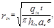
где qin - расход раствора, нагнетаемого в скважину, м3/ч;
t - продолжительность нагнетания раствора в скважину, ч;
hin - толщина споя закрепляемого грунта, м;
ae - коэффициент неравномерности распространения трещин и пор в горной породе,
е - коэффициент пористости горных пород полученный по формуле (4) значения необходимо уточнять при проведении опытно-производственных работ
4.32. При проектировании завесы следует устанавливать очередность бурения и инъецирования скважин в ряду по методу последовательного сближения, располагая скважины первой очереди на расстоянии, исключающем их связь по трещинам в процессе нагнетания раствора.
4.33 Устройство инъекционных завес следует предусматривать с поверхности или из горных выработок.
4.34. Направление (угол наклона) скважин следует задавать с учетом пересечения наибольшего числа преобладающих водопроводящих трещин и контактов напластований.
4.35. Диаметры буровых скважин при выбранном способе бурения следует назначать в соответствии с их глубиной, составом и строением проходимых пород, а также с учетом обеспечения пропуска требуемых расходов воды и нагнетаемых растворов.
Диаметры скважин допускается назначать в пределах 42 - 91 мм, а при заполнении крупных полостей и пустот вязкими растворами - 91 - 110 мм.
4.36. В песчаных породах вместо бурения скважин допускается предусматривать забивку перфорированных инъекторов с предельной глубиной погружения 12 - 15 м. Погружение инъекторов на большую глубину следует предусматривать в пробуренные скважины.
4.37. При проектировании инъекционных завес давление инъецируемых растворов, как правило, следует устанавливать по данным опытных работ; при их отсутствии допускается устанавливать давление на основании данных выполнения завес в аналогичных условиях.
В проекте следует предусматривать необходимые мероприятия для предотвращения прорывов нагнетаемых растворов на поверхность земли или в горные выработки.
4.38. При проектировании инъекционных завес кроме настоящих норм необходимо соблюдать требования СНиП 3.02.03-84.
ЛЬДОПОРОДНЫЕ ЗАВЕСЫ (ОГРАЖДЕНИЯ)
4.39. Льдопородные завесы, выполняемые путем искусственного замораживания горных пород, следует предусматривать для защиты подземных (вертикальных, горизонтальных и наклонных) горных выработок в период их проходки в нескальных неустойчивых и трещиноватых скальных водоносных горных породах.
При надлежащем обосновании допускается предусматривать применение льдопородных завес для защиты открытых выработок на период разработки.
4.40. Границы применимости замораживания горных пород следует определять расчетом в зависимости от скорости фильтрации, температуры и степени минерализации подземных вод и технологии замораживания.
4.41. Льдопородные завесы должны быть полностью замкнутыми и заглубляться в устойчивые водоупорные породы.
4.42. Толщину льдопородной завесы следует определять статическими расчетами в зависимости от ее назначения, формы и размеров выработки в плане, глубины, а также прочностных характеристик замороженных пород.
4.43. Температуру льдопородной завесы и расстояние между замораживающими скважинами следует устанавливать на основании опытных данных. При отсутствии опытных данных допускается принимать:
среднюю температуру льдопородной завесы - в пределах 30 - 40 % температуры холодоносителя, циркулирующего в замораживающих колонках;
расстояние между замораживающими скважинами при однорядном их расположении - в пределах 1 - 1,5 м, между рядами при многорядном расположении - в пределах 2 - 3 м.
4.44. Мощность холодильной установки следует определять теплотехническими расчетами в зависимости от проектного объема льдопородной завесы.
4.45. В проекте следует предусматривать мероприятия по контролю за уровнем подземных вод, температурой горных пород, а также сплошностью и толщиной льдопородной завесы.
4.46. При проектировании льдопородных завес кроме настоящих норм необходимо соблюдать требования СНиП 3.02.03-84 и ВСН 189-78, согласованных Госстроем СССР и утвержденных Министерством транспортного строительства.
5. РЕГУЛИРОВАНИЕ ПОВЕРХНОСТНОГО СТОКА, ВОДООТВОД
5.1. При регулировании поверхностного стока следует предусматривать:
отвод воды с карьерных и по возможности с шахтных полей водотоков и водоемов;
ограждение карьерных и шахтных полей от попадания в них воды с прилегающей территории;
исключение или сокращение инфильтрации поверхностных вод в горные породы в зоне влияния водопонизительных систем и водоотлива из горных выработок, а также больших скоплений воды в пониженных участках рельефа в пределах шахтных (карьерных) полей, в том числе в мульдах сдвижения земной поверхности;
предотвращение разрушения бортов карьера (разреза) и нарушения в нем нормального ведения эксплуатационных работ поверхностными водами из атмосферных осадков, выпадающих непосредственно на площадь открытой выработки, потерь технологических вод и др.
5.2. В проекте системы регулирования поверхностного стока в зависимости от местных условий следует предусматривать нагорные канавы, ограждающие дамбы, плотины, водостоки и водозаборы, спрямление и отвод рек в новое русло, противофильтрационную изоляцию русел в пределах шахтного (карьерного) поля и на прилегающей территории, а также водостоки, сбросные линии и водосборники в открытых выработках, обеспечивающие совместно с проектируемыми мероприятиями по защите от подземных вод охрану горных выработок от внезапных прорывов воды и недопустимых притоков из водных объектов и в то же время охрану водных объектов, имеющих народнохозяйственное значение, от вредного влияния горных выработок.
5.3. Обеспеченность расчетных гидролого-метеорологических характеристик для проектирования гидротехнических сооружений систем защиты должна устанавливаться организацией, утверждающей техническое задание.
5.4. Отказ от защиты подземных горных выработок от поверхностных вод должен быть обоснован.
5.5. При проектировании дождевой сети в пределах нагорных канав карьерного или шахтного поля приток дождевых вод следует определять по методу предельных интенсивностей. Период однократного превышения расчетной интенсивности дождя следует принимать, как правило, равным 5 годам, для особо ответственных или опасных в отношении устойчивости бортов выработок (в случаях специально оговоренных в задании на проектирование) - 10 годам.
Нагорные канавы следует проектировать из расчета на максимальный паводковый расход обеспеченностью 5 %.
Карьерные водосборники и насосные станции следует проектировать исходя из общего притока к карьеру, определяемого по суточному слою осадков, с периодом его однократного превышения, как правило:
для карьерных водосборников - 5 лет,
для карьерных насосных станций - 4 мес.
Для особо ответственных объектов (в случаях, специально оговоренных в задании на проектирование):
для карьерных водосборников - 10 лет,
для карьерных насосных станций - 1 год.
(Измененная редакция. Изм. № 1).
5.6. Допускаемые скорости воды в водостоках следует проектировать из расчета на максимальный паводковый расход обеспеченностью 5 %.
Лотки на откосах следует проектировать прямоугольного, трапецеидального или полукруглого сечения с креплением, исключающим возможность их размыва ливнями (с обеспеченностью 5 %).
Канавы, используемые в качестве траншейного дренажа, следует проектировать с пологими откосами без крепления.
На карьерных съездах и спусках следует предусматривать лотки-перехватчики стока. Их следует перекрывать стальными решетками, допускающими проезд транспорта.
5.7. Весь карьерный сток должен быть удален за пределы карьера (разреза) с помощью водоотлива (см. разд. 3). Если условия рельефа позволяют, карьерный сток или часть его следует отводить самотеком к местам сброса рудничных вод.
5.8. Внекарьерные и внешахтные водоотводящие устройства допускается выполнять в виде открытых канав, лотков, безнапорных и напорных трубопроводов.
При проектировании внекарьерных и внешахтных водоотводящих устройств следует предусматривать мероприятия для предотвращения подпитки подземных вод в пределах зоны влияния водопонизительных систем. При невозможности выполнения указанных мероприятий при расчете водопонижения следует учитывать дополнительный приток подземных вод, обусловленный подпиткой.
5.9. Для предотвращения замерзания воды в трубопроводах и насосах в зимний период следует предусматривать:
укладку самотечных трубопроводов с уклоном не менее 0,005, а при длительных перерывах в работе - с уклоном 0,05 - 0,02;
установку вентилей или задвижек для выпуска воды в низких местах напорных трубопроводов;
установку насосных агрегатов в отапливаемых помещениях.
Дополнительные мероприятия по предохранению трубопроводов от промерзания следует предусматривать в соответствии с теплотехническим расчетом.
5.10. При сбросе шахтных и карьерных вод на поверхность земли, в овраги, водотоки, водоемы, а также в водопоглощающие слои необходимо соблюдать требования разд. 6.
6. ОХРАНА ОКРУЖАЮЩЕЙ ПРИРОДНОЙ СРЕДЫ
6.1. При проектировании систем защиты следует предусматривать охрану окружающей природной среды путем:
выбора проектных решений систем защиты и конструктивных решений защитных сооружений и устройств, при которых обеспечивается наименьший ущерб из-за истощения и загрязнения подземных вод, загрязнения, засорения, нарушения режима и размыва берегов поверхностных водных объектов, размыва и эрозии почв, заболачивания территории, сдвижения и деформации горных пород и темной поверхности, осадок и деформаций сооружений на прилегающей территории;
использования сооружений, устройств и мероприятий, проектируемых специально для этой цели;
рационального восполнения причиняемого ущерба.
6.2. При проектировании поэтапного ввода в действие водопонизительных устройств не следует допускать опережающего развития водопонизительных систем и понижения уровней подземных вод в большей мере, чем предусмотрено пп. 1.14 и 1.19. Необходимо, как правило, дифференцировать откачку и водоотвод чистой и грязной воды и предусматривать полное или частичное использование откачиваемых вод для водоснабжения, сельскохозяйственных целей и других видов водопользования.
6.3. Сброс воды, откачиваемой из водопонизительных устройств и горных выработок, на поверхность земли, как правило, не допускается.
Допускается предусматривать сброс воды на неиспользуемые земли, если при этом исключаются возможность попадания их в водные объекты, загрязнение подземных вод, эрозия почвы, заболачивание местности и другие виды ущерба окружающей природной среде.
При проектировании сброса рудничных вод в поверхностные водные объекты и овраги следует соблюдать требования «Правил охраны поверхностных вод от загрязнения сточными водами», утвержденных Минводхозом СССР, Минздравом СССР и Минрыбхозом СССР.
При проектировании сброса рудничных вод в подземные водоносные слои необходимо соблюдать требования «Положений по охране подземных вод», утвержденных Мингео СССР, Минводхозом СССР и Минздравом СССР и согласованных Госгортехнадзором СССР.
При проектировании сброса рудничных вод в моря необходимо соблюдать требования «Правил охраны морей от загрязнения», утвержденных Минздравом СССР.
6.4. При непосредственном сбросе рудничных вод в водные объекты, овраги и обратно в дренируемые водоносные слои, если не могут быть обеспечены требования, указанные в п. 6.3, необходимо предусматривать соответствующие мероприятия, направленные на предотвращение загрязнения водных объектов от взвешенных и растворенных веществ, содержащихся в рудничных водах.
6.5. Для снижения концентрации взвешенных веществ следует предусматривать отстаивание рудничных вод в отстойниках.
Вместимость отстойника следует определять с учетом объема откачиваемых рудничных вод, требуемого времени отстоя и допускаемого сброса осветленных вод в водный объект условия сброса осветленных вод в водный объект необходимо определять в соответствии с «Правилами охраны поверхностных вод от загрязнения сточными водами» время отстоя рудничных вод для достижения необходимого снижения концентрации взвешенных веществ следует определять опытным путем.
6.6. Для снижения концентрации загрязняющих веществ необходимо предусматривать применение соответствующих физико-химических и биологических методов очистки рудничных вод.
При соответствующем обосновании очистка рудничных вод может быть заменена сбросом их в накопители-испарители.
В отдельных случаях, по согласованию с органами по регулированию использования и охране вод системы Минводхоза СССР, допускается проектировать устройство накопителя-регулятора со сбросом из него минерализованных вод в водотоки во время паводка при условии соблюдения установленных норм предельно допустимых концентраций (ПДК) веществ в воде водных объектов в соответствии с «Правилами охраны поверхностных вод от загрязнения сточными водами».
6.7. Расположенные вблизи горных выработок бессточные впадины (понижения) или небольшие озера, не имеющие рекреационного, рыбохозяйственного или другого народнохозяйственного значения, могут быть использованы в качестве накопителей-регуляторов или накопителей-испарителей при предоставлении этих объектов в обособленное пользование на основании ст. 15 «Основ водного законодательства Союза ССР и союзных республик».
6.8. При проектировании накопителей-регуляторов и накопителей-испарителей должны быть предусмотрены мероприятия, исключающие возможность загрязнения подземных вод, - устройство противофильтрационных завес, экранов и др. По контуру накопителей необходимо предусматривать наблюдательные скважины для контроля степени загрязнения подземных вод.
6.9. В проекте следует предусматривать сбор, удаление и обезвреживание рудничных вод, содержащих радиоактивные вещества в соответствии с действующими нормами радиационной безопасности и санитарными правилами работы с радиоактивными обществами и другими источниками ионизирующих излучений.
Сброс рудничных вод, содержащих радиоактивные вещества, на поверхность земли, в водные объекты, используемые для хозяйственно-питьевых, культурно-бытовых и рыбохозяйственных целей, и в водоносные слои не допускается.
6.10. В проекте должны быть предусмотрены устройства и мероприятия для предохранения почв и берегов водных объектов от размыва откачиваемыми водами.
6.11. Условия сброса рудничных вод указываются в разрешении на специальное водопользование, выдаваемом органами по регулированию использования и охране вод системы Минводхоза СССР при отводе площадки для строительства горного предприятия в соответствии с «Инструкцией о порядке согласования и выдачи разрешений на специальное водопользование», согласованной Госстроем СССР и утвержденной Минводхозом СССР.
6.12. По данным оценки качества откачиваемых вод в проекте следует принимать решения по извлечению из них полезных компонентов.
6.13. При проектировании противофильтрационных устройств и мероприятий следует учитывать, что в зоне действия водозаборов хозяйственно-питьевого водоснабжения не допускается инъекция в водоносные слои растворимых в воде веществ.
6.14. В зоне влияния водопонизительных систем необходимо учитывать возможное оседание земной поверхности, деформации и сдвижения горных пород и определять дополнительные перемещения фундаментов сооружений.
6.15. Расчет оседания земной поверхности в основании сооружений при ожидаемом понижении уровня подземных вод следует производить суммированием деформаций отдельных слоев.
6.16. При сложных инженерно-геологических условиях площадки строительства для определения оседания, деформации и сдвижения толщи горных пород допускается применять моделирование.
6.17. При проектировании водопонизительных систем необходимо учитывать возможность возникновения или активизации карстово-суффозионных процессов и разрыхления грунтов в основании зданий и сооружений, особенно если верхняя часть грунтовой толщи сложена песками. В проекте следует предусматривать соответствующие мероприятия по защите оснований существующих и проектируемых сооружений (шпунтовые ограждения, кольматацию, цементацию и др.).
6.18. При невозможности закладки горными породами отработанного пространства карьера (разреза) допускается предусматривать его рекультивацию путем переустройства в водоем для различных видов водопользования.
ПРИЛОЖЕНИЕ 1
Рекомендуемое
РАСЧЕТ ВОДОПОНИЗИТЕЛЬНЫХ (ДРЕНАЖНЫХ) СИСТЕМ
ОБЩИЕ УКАЗАНИЯ
1. Для расчета водопонижения необходимо схематизировать природные условия и водопонизительную систему. Толща горных пород разбивается на условно-однородные водоносные и водоупорные (или условно-водоупорные) слои. Водоносный слой может быть принят неограниченным или ограниченным (полностью или частично) контуром питания или водонепроницаемым контуром. Питание водоносных слоев принимается за счет притока подземных вод из водоема или водотока, инфильтрации атмосферных осадков, перетекания из одного водоносного слоя в другой.
Водопонизительные системы схематизируются по этапам их развития и приводятся, как правило, к одной из следующих схем: кольцевой, неполно-кольцевой, линейной или групповой (не приводимой к схеме круга или прямой линии).
2. Расчеты водопонижения производятся для установившегося и неустановившегося режимов фильтрации. Расчеты для установившегося режима должны выполняться, как правило, во всех случаях (за исключением водопонижения в закрытых водоносных слоях, не имеющих питания). Расчеты по неустановившемуся режиму выполняются для периода с начала откачки до момента времени, соответствующего наступлению установившегося режима, определяемого в зависимости от условий питания водоносных слоев.
В закрытых водоносных слоях, не имеющих питания, расчет ведется только по неустановившемуся режиму.
3. Общий порядок расчета водопонизительной (дренажной) системы следующий:
устанавливается требуемое понижение уровня подземных вод (в зависимости от поставленной задачи водопонижения);
производится расчет притока к водопонизительной (дренажной) системе;
определяются параметры водопонизительной системы (число скважин, их глубина, производительность, диаметр, положение динамических уровней воды в скважинах, диаметр и пропускная способность трубчатых дренажей, параметры других водопонизительных устройств), исходя из общего притока определяются ординаты и производится построение депрессионных поверхностей подземного потока;
подбирается оборудование и рассчитываются водоотводящие устройства.
4. Приток подземных вод к водопонизительной системе следует определять в зависимости от требуемого понижения уровня подъемных вод в расчетной точке по формуле
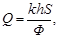
Допускается при соответствующем обосновании вместо величин h и k вводить в формулу (1) величину водопроводимости kh, м3/сут, значение которой непосредственно определяется по результатам опытных откачек.
5. Общие притоки подземных вод к водопонизительным системам и горным выработкам определяются как сумма притоков из каждого водоносного слоя, дренируемого водопонизительной системой или непосредственно выработками.
ОПРЕДЕЛЕНИЕ ПРИТОКА ПРИ УСТАНОВИВШЕМСЯ РЕЖИМЕ ФИЛЬТРАЦИИ
6. При определении по формуле (1) притока подземных вод к кольцевым, неполнокольцевым и линейным водопонизительным системам, а также горным выработкам при отсутствии или наличии противофильтрационной завесы значение ф следует вычислять по формулам табл. 1.
Таблица 1
|
Расчетная формула |
|
|
Схема 1 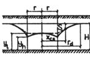 Совершенная или несовершенная контурная система. Приток в зависимости от понижения в заданной точке при безнапорной или напорной фильтрации |
Кольцевая система 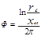 Неполнокольцевая система 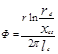 При расположении расчетной точки на контуре или в центре системы xCS = r |
|
Схема 2 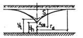 Совершенная или несовершенная линейная система. Приток в зависимости от понижения в заданной точке при безнапорной или напорной фильтрации |
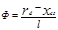 |
|
Схема 3 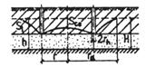 Кольцевой дренаж в кровле водоносного слоя, содержащего напорные воды. Приток в зависимости от глубины заложения дренажа, равной Sl |
Кольцевой дренаж 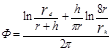 Неполнокольцевой дренаж 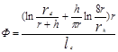 |
|
Схема 4 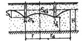 Кольцевой несовершенный дренаж в водоносном слое, содержащем безнапорные воды. Приток в зависимости от глубины заложения дренажа, равной Sl |
Кольцевой дренаж 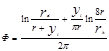 Неполнокольцевой дренаж 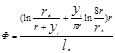 |
|
Схема 5 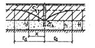 Линейный дренаж в кровле слоя, содержащего напорные воды. Приток в зависимости от глубины заложения дренажа, равной Sl |
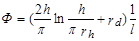 |
|
Схема 6 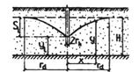 Линейный несовершенный дренаж в слое, содержащем безнапорные воды. Приток в зависимости от глубины заложения дренажа, равной Sl |
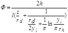 |
|
Схема 7 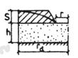 Котлован (пластовый дренаж), вскрывающий напорные воды |
При 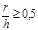 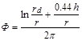 При 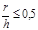 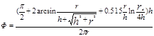 |
|
Схема 8 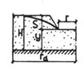 Котлован (пластовый дренаж) в безнапорном водосносном слое |
При 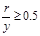 При 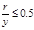 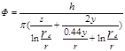 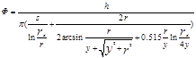 |
|
Схема 9 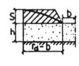 Траншея (пластовый дренаж), вскрывающий напорные воды |
При 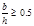 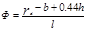 При < 0,5 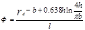 |
|
Схема 10 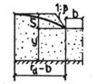 Траншея (пластовый дренаж) в безнапорном водосносном слое |
При 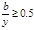 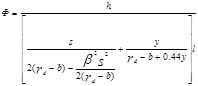 При < 0,5 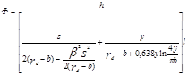 |
|
Схема 11 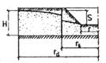 Приток к котловану через контурную совершенную противофильтрационную завесу |
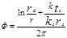 |
|
Схема 12 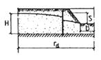 Приток к траншее через линейную совершенную противофильтрационную завесу |
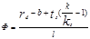 |
7. Приведенный радиус водопонизительной системы (выработки по границе высачивания подземных вод, противофильтрационной завесы по ее внутренней грани) следует определять по формулам:
для контурной водопонизительной системы (выработки или контурной завесы) с отношением сторон, равным или менее 10,
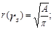
для контурной водопонизительной системы (выработки или контурной завесы) с отношением сторон свыше 10 и для коротких (l < 2L) линейных водопонизительных систем
r = 0,25l; (3)
для длинной (l ³ 2L) линейной водопонизительной системы (траншей)
r = 0. (4)
8. Значение радиуса депрессии rd для контурных и коротких линейных водопонизительных систем и устройств следует принимать равным радиусу области фильтрации, когда ее граница - контур питания - может быть принята круговой формы, а для других граничных условий - по формулам табл. 2, для длинных линейных водопонизительных систем и устройств - по формуле
rd = L. (5)
9. При двустороннем притоке к длинным линейным водопонизительным системам (устройствам) приток подземных вод определяется раздельно с каждой стороны (в зависимости от соответствующих расстояний до области питания) и суммируется.
Таблица 2
|
Расчетная формула |
||
|
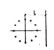 |
Водоносный слой, ограниченный одной линейной границей области питания |
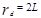 |
|
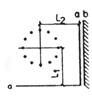 |
Водоносный слой имеет два линейные взаимно перпендикулярные границы а - область питания b - водонепроницаемая |
Для границ а, а 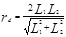 Для границ a, b 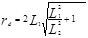 |
|
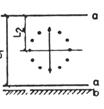 |
Водоносный слой имеет два параллельные линейные границы а - область питания b - водонепроницаемая |
Для границ а, а 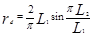 Для границ a, b 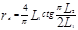 |
|
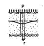 |
Неограниченный водоносный слой, питание которого происходит за счет инфильтрации поверхностных вод интенсивностью p |
|
|
|
Неограниченный водоносный слой, содержащий напорные воды, питание которого происходит за счет протекания воды из вышележащего слоя |
|
ОПРЕДЕЛЕНИЕ ПРИТОКА ПРИ НЕУСТАНОВИВШЕМСЯ РЕЖИМЕ ФИЛЬТРАЦИИ
10. Для начального периода неустановившегося режима (депрессия не достигает области питания) значение функции понижения Ф следует определять по формулам схемы 1 табл. 3 или принимать равным значению величины Ф, определяемому по формулам установившегося режима (табл. 1), исходя из значений радиуса депрессии rd, вычисленных для соответствующих моментов времени по формуле
. (6)
Значение величины а определяется опытным путем или по формулам:
. (7)
В дальнейшем, когда депрессия достигнет области питания, значения функции понижения для определения притока подземных вод к контурным и коротким линейным водопонизительным системам по формуле (1) следует принимать по формулам схем 2 - 7 табл. 3.
Значения примененной в табл. 3 функции Еi (-и) приведены в табл. 4.
Таблица 3
|
Расчетная формула |
|
|
Схема 1
Неограниченный водоносный слой |
. Для центра системы xcs = r. Для одиночной скважины xcs = rh |
|
Схема 2
Водоносный слой ограничен прямолинейным контуром питания или непроницаемым контуром |
Знак «плюс» соответствует непроницаемому контуру, знак «минус» - контуру питания. Для центра системы xcs = r, x = 0, y = 0 |
|
Схема 3
Слой ограничен двумя взаимно перпендикулярными контурами, каждый из которых может быть контуром питания или непроницаемым |
Знаки функции + Еi соответствуют видам границ водоносного слоя: [+ - + -] - x, z - контуры питания; [++++] - x, z - непроницаемые контуры; [++--] - x - контур питания; z - непроницаемый контур |
|
Схема 4
Слой ограничен двумя параллельными контурами питания или одним контуром питания, другим - непроницаемым |
Для центра системы
Знаки функции Еi соответствуют: знак «плюс» - непроницаемому контуру, знак «минус» - контуру питания |
|
Схема 5
Неограниченный водоносный слой |
Для равнодебитных скважин
где |
|
Схема 6
Водоносный слой ограничен прямолинейным контуром питания или непроницаемым контуром |
Для функции ±Ei знак «плюс» соответствует непроницаемому контуру, знак «минус» - контуру питания. Для равнодебитных скважин при границе - контур питания и установившемся режиме
где
|
|
Схема 7
Водоносный слой ограничен двумя перпендикулярными контурами - питания или непроницаемым |
Знаки функции + Еi соответствуют видам границ водоносного слоя: [+ - + -] - x, z - контуры питания; [++++] - x, z - непроницаемые контуры; [++--] - x - контур питания; z - непроницаемый контур a) ; б) , где
- см. схему 6. |
|
Примечание. При определении уровня в одной из действующих скважин величина Xh для этой скважины принимается равной ее радиусу rh. |
|
Таблица 4
|
и |
Ei (-и) |
W (и, n) при n |
||||||
|
0,05 |
0,1 |
0,2 |
0,6 |
1,0 |
2,0 |
5,0 |
||
|
0 |
- ¥ |
6,228 |
4,854 |
3,505 |
1,555 |
0,842 |
0,228 |
0,007 |
|
0,01 |
-4,038 |
4,043 |
3,815 |
3,288 |
1,555 |
0,841 |
0,228 |
0,007 |
|
0,02 |
-3,355 |
3,326 |
3,344 |
2,852 |
1,553 |
0,841 |
0,228 |
0,007 |
|
0,03 |
-2,959 |
3,037 |
2,887 |
2,690 |
1,542 |
0,841 |
0,228 |
0,007 |
|
0,04 |
-2,681 |
2,748 |
2,629 |
2,482 |
1,521 |
0,841 |
0,228 |
0,007 |
|
0,06 |
-2,468 |
2,458 |
2,427 |
2,311 |
1,493 |
0,841 |
0,228 |
0,007 |
|
0,06 |
-2,295 |
2,312 |
2,262 |
2,167 |
1,459 |
0,839 |
0,228 |
0,007 |
|
0,07 |
-2,161 |
2,166 |
2,123 |
2,044 |
1,423 |
0,836 |
0,228 |
0,007 |
|
0,08 |
-2,027 |
2,021 |
2,003 |
1,935 |
1,386 |
0,832 |
0,228 |
0,007 |
|
0,09 |
-1,919 |
1,754 |
1,898 |
1,839 |
1,349 |
0,826 |
0,228 |
0,007 |
|
0,1 |
-1,823 |
1,487 |
1,805 |
1,763 |
1,312 |
0,819 |
0,228 |
0,007 |
|
0,2 |
-1,223 |
1,221 |
1,216 |
1,194 |
0,996 |
0,715 |
0,228 |
0,007 |
|
0,3 |
-0,906 |
1,000 |
0,902 |
0,890 |
0,778 |
0,601 |
0,216 |
0,007 |
|
0,4 |
-0,702 |
0,779 |
0,700 |
0,693 |
0,621 |
0,502 |
0,205 |
0,007 |
|
0,5 |
-0,560 |
0,559 |
0,558 |
0,553 |
0,504 |
0,421 |
0,194 |
0,007 |
|
0,6 |
-0,454 |
0,476 |
0,453 |
0,450 |
0,415 |
0,354 |
0,177 |
0,007 |
|
0,7 |
-0,374 |
0,393 |
0,373 |
0,370 |
0,345 |
0,300 |
0,161 |
0,007 |
|
0,8 |
-0,311 |
0,310 |
0,310 |
0,308 |
0,289 |
0,254 |
0,144 |
0,007 |
|
0,9 |
-0,260 |
0,223 |
0,260 |
0,258 |
0,244 |
0,217 |
0,128 |
0,007 |
|
1,0 |
-0,219 |
0,136 |
0,219 |
0,218 |
0,206 |
0,186 |
0,114 |
0,007 |
|
2,0 |
-0,049 |
0,049 |
0,049 |
0,049 |
0,047 |
0,044 |
0,034 |
0,005 |
|
5,0 |
-0,001 |
0,001 |
0,001 |
0,001 |
0,001 |
0,001 |
0,001 |
0,000 |
|
8,0 |
0 |
0 |
0 |
0 |
0 |
0 |
0 |
0 |
11. При определении притока подземных вод к контурной или короткой линейной водопонизительной системе в толщах, сложенных из нескольких неоднородных слоев, неограниченных или ограниченных с одной стороны (имеющих одну прямолинейную границу), значения функции понижения для слоя, из которого производится откачка, следует принимать по формулам:
для неограниченного слоя
(8)
для слоя, ограниченного с одной стороны,
. (9)
Здесь знаки «±» соответствуют: «плюс» - непроницаемому контуру, «минус» - контуру питания. Значения функции V (и, v) определяются по табл. 4:
(10)
bd определяется для соответствующих расчетных схем по формулам табл. 5
Таблица 5
|
Расчетная формула |
|
|
Схема 1
|
|
|
Схема 2
|
|
|
Схема 3
|
|
Для центра и контура системы xcs = r.
12. При определении притока подземных вод к длинным линейным водопонизительным системам по формуле (1) значения функции понижения Ф вычисляются по формуле
Значения функций F (и) определяются по графику черт. 1.
Черт. 1. График функции F(и)
13. Значение функции понижения при разновременном пуске или остановке элементов водопонизительной системы, когда на каждом i-м промежутке времени Qi = const и график расхода Q (t) изображается ступенчатой линией (черт. 2), следует определять для n-го промежутка времени по формуле
. (12)
Черт. 2. Ступенчатый график откачки
14. Продолжительность неустановившегося режима допускается принимать равной значению времени t, при котором вычисляемая по табл. 3 функция понижения Ф достигнет значения, определяемого для соответствующих схем и условий питания по табл. 1.
РАСЧЕТ
СКВАЖИННЫХ ВОДОПОНИЗИТЕЛЬНЫХ СИСТЕМ
15. Расположение водопонизительных скважин, их число и заглубление следует принимать исходя из притока подземных вод и необходимого понижения их уровня.
Расчетную производительность скважин следует определять с учетом полученных опытных данных.
При отсутствии опытных данных производительность скважины допускается определять по эмпирической формуле
16. При расчете водопонизительных скважин, предварительно задаваясь их параметрами (глубиной, диаметром и длиной смоченной части фильтра) и руководствуясь опытными данными, а при их отсутствии - формулой (13), необходимо определить производительность одной скважины. Исходя из производительности одной скважины и общего притока подземных вод к водопонизительной системе намечают число скважин и их расположение, принимая на каждую их них примерно равную нагрузку. При этом необходимо принимать во внимание особенности гидрогеологических условий, а также уменьшение с течением времени производительности скважин по мере сработки уровней подземных вод и в результате процессов кольматации, коррозии и химического зарастания фильтров.
17. При принятых расположении и производительности скважин необходимо проверить величины понижения уровня подземных вод в расчетных точках на линии водопонизительных скважин и в самих скважинах.
Понижения в расчетных точках при контурных и линейных водопонизительных системах следует вычислять исходя из значений функции понижения Ф, определяемых по формулам схем 1 и 2 табл. 1 и формуле (1) при напорном потоке - непосредственно, при безнапорном - после подстановки в формулу (1)
. (14)
18. Понижение уровня подземных вод на линии скважин определяется по формуле (1) по значениям Ф при Xcs = r для контурных и Xcs = 0 для линейных систем.
Связь между понижениями уровней воды в совершенных скважинах и на их линии для напорного потока выражается формулой
Связь между уровнями воды в совершенных скважинах и на их линии для безнапорного потока имеет вид
Ордината уровня воды на линии скважин определяется по формуле
. (17)
Для совершенных скважин показатель внутреннего фильтрационного сопротивления
; (18)
. (19)
Для несовершенных по степени вскрытия водоносного слоя скважин показатель внутреннего фильтрационного сопротивления с учетом дополнительного гидродинамического сопротивления из-за неполного вскрытия водоносного слоя определяется по формуле
; (20)
в напорных условиях
где е определяется по графику черт. 3.
а) б)
в) г)
Черт. 3. К расчету сопротивления скважин на гидрологическое несовершенство
а, б - схемы несовершенных скважин в напорном и безнапорном пластах; а, г - графики для определения е
В безнапорных условиях в формуле (21) и при определении значения e по графику черт. 3 следует вместо значения If подставлять bf и вместо значения h подставлять yh.
При расчете систем из несовершенных скважин в формулы (15) и (16) следует вместо значения Фin подставлять Фimp.
19. При выбранных числе, расчетной производительности и расположении водопонизительных скважин групповой системы следует проверить достижение требуемого понижения уровня подземных вод в расчетных точках и в самих скважинах путем суммирования действий каждой скважины в отдельности:
Значения функций понижения для расчетных точек вне скважины определяются по формулам табл. 6, а в совершенной скважине от ее собственного действия - по формуле
При расчете систем из несовершенных скважин по формулам (21) - (23) значение функции понижения фimp входит в выражение расчетного радиуса rhe, совершенной скважины, эквивалентной по дебиту действительной несовершенной скважине:
. (24)
Расчет производится как для совершенных скважин с подстановкой в формулу (23) вместо rh величины расчетного радиуса rhe.
20. Окончательная глубина скважин и глубина погружения скважинного насоса, а также диаметр и длина фильтра устанавливаются на основании определенных по пп. 18 и 19 понижений и отметок уровней воды в самих скважинах.
Для длительного срока службы фильтр, как правило, следует располагать ниже уровня воды в скважине. При соответствующем обосновании допускается использовать водопонизительные скважины с незатопленным фильтром, например, на конечном этапе при понижении уровня воды до водоупора. В этом случае при определении длины действующей (смоченной) части фильтра следует учитывать высоту высачивания, определяющую уровень воды за скважиной, и вычислять длину действующей части незатопленного фильтра lf, м:
для совершенных скважин - по формуле
для несовершенных скважин в формулу (25) вместо течения величины yh, следует подставлять bf.
Черт. 4. Графики функций Q (и, n) и Q1 (и, n)
РАСЧЕТ ТРУБЧАТЫХ И ГАЛЕРЕЙНЫХ ДРЕНАЖЕЙ
21. При принятой глубине заложения кольцевого дренажа приток подземных вод к нему следует вычислять по формуле (1) и формулам схем 3 и 4 табл. 1.
Это же значение величины притока следует принимать при определении понижения уровней подземных вод согласно п. 18 в точках, являющихся внешними по отношению к контуру дренажа.
22. Понижение уровня подземных вод в центре кольцевого дренажа при заданной глубине его заложения, а также требуемую глубину заложения кольцевого дренажа при заданном понижении в его центре следует определять из уравнения
. (26)
Для схемы 3 табл. 1 yl = h; для схемы 4 той же таблицы уl = Н - Sl;
 . (27)
. (27)
Значения функций определяются соответственно по графикам черт. 5.
Уравнение (27) следует решать подбором или графически.
Таблица 6
|
Расчетная формула |
|
|
Схема 1
В слое с круговым контуром питания |
|
|
Схема 2
В полуограниченном слое (с одним контуром питания) 1 - скважина; 2 - область питания |
x имеет положительные значение, если точка М находится между скважиной и областью питания |
|
Схема 3
В полосообразном слое с двумя контурами питания 1 - скважина; 2 - область питания |
Функция Q (и, n) определяется по черт. 4 |
|
Схема 4
В слое между областью питания и непроницаемой границей 1 - скважина; 2 - область питания |
Функция Q (и, n) определяется по черт. 4 |
а - j1(u); б - j2(u); в - j3(u)
23. При заданной глубине заложения линейного дренажа приток подземных вод к нему следует определять по формуле (1) и формулам схем 5 и 6 табл. 1, а уровень подземных вод в точках на расстоянии х от оси линейного дренажа - по указаниям п. 17 исходя из величины притока, вычисленной по формуле (11).
24. При заданном требуемом понижении в точке на расстоянии х от оси линейного дренажа следует вначале определить приток подземных вод к нему по формуле (1) и формулам схемы 2 табл. 1, затем, используя формулы схем 5 и 6 той же таблицы, определить подбором необходимую глубину заложения линейного дренажа.
25. Буквенные обозначения, входящие в формулы, приведены в справочном приложении 3.
ПРИЛОЖЕНИЕ 2
Обязательное
ПРОЕКТИРОВАНИЕ ВОДОПОНИЗИТЕЛЬНЫХ УСТРОЙСТВ
ВОДОПОНИЗИТЕЛЬНЫЕ И НАБЛЮДАТЕЛЬНЫЕ СКВАЖИНЫ
1. Для определения конструкции водопонизительных скважин в проекте должны быть выбраны способ бурения и требуемое крепление скважин обсадными трубами.
Допускается предусматривать бурение скважин с глинистой промывкой в пределах недренируемых слоев, а также в пределах дренируемых водоносных слоев в тех случаях, когда опытным путем доказана эффективность последующей разглинизации скважин.
Диаметр бурения скважин под фильтровую колонну следует принимать по наружному диаметру предусмотренной проектом фильтрующей обсыпки.
В колоннах обсадных труб, предусмотренных на период эксплуатации скважин, верхний обрез каждой остающейся обсадной трубы должен быть выше башмака предыдущей трубы не менее чем на 3 м при глубине скважины до 50 м не менее чем на 5 м - при большей глубине скважины; кольцевой зазор между трубами должен быть зацементирован (так же, как все затрубное пространство остающейся трубы) или заделан сальником.
При проектировании водопонизительных скважин в подземных выработках следует предусматривать их бурение с применением устройства, исключающего прорыв подземных вод в выработки. В мягких породах при соответствующем обосновании допускается предусматривать устройство самоизливающихся скважин из подземных выработок путем забивки или задавливания фильтровой колонны на требуемую глубину.
2. Для водопонизительных скважин следует предусматривать трубчатые, каркасно-стержневые, гравитационные, корзинчатые, кожуховые и блочные фильтры или проектировать водоприемную часть скважины без установки в ней фильтров исходя из требований табл. 1
Каждое фильтровое звено должно иметь паспорт завода-изготовителя с указанием всех его технических данных.
При невозможности получения фильтров заводского изготовления на них должен быть выдан специальный проект, разработанный проектной организацией.
Фильтры должны обладать достаточной прочностью, обеспечивающей их нормальную работу в скважине, а также сохранность при монтаже и транспортировании. Проектировать их следует в антикоррозионном исполнении.
Соединение фильтровых звеньев между собой, а также с отстойником и надфильтровыми трубами должно быть, как правило, резьбовым.
3. Перфорацию труб следует предусматривать в виде круглых отверстий или щелей. Водоприемные покрытия трубчатых и каркасно-стержневых фильтров следует выполнять проволочными, навитыми по спирали с заданным постоянным шагом, сетчатыми или из просечного стального листа с различными типами перфорации («мостом», круглыми отверстиями, щелями и т.д.).
4. Скважность боковой поверхности трубчатых фильтров должна быть порядка 18 - 25 %, водоприемного покрытия из проволочной обмотки или просечного листа - порядка 30 - 60 %.
Размер проходных отверстий водоприемного покрытия, а при его отсутствии - отверстий или щелей фильтра должен быть равен среднему диаметру частиц di,mi прилегающей породы или обсыпки.
5. В качестве материала обсыпки фильтров следует применять отмытый песок и гравий или песчано-гравийные смеси, а также продукты дробления изверженных или прочных осадочных пород с удельным весом не менее 20 кН/м3 (2 тс/м3) и временным сопротивлением сжатию не менее 60 МПа.
Материал обсыпки должен быть плотным, нерастворимым в воде, свободным от солевых примесей.
6. Гранулометрический состав песчано-гравийной обсыпки, число слоев и их толщину следует подбирать исходя из требований табл. 2
Укладку обсыпки следует предусматривать на 2 - 10 м выше верхней кромки фильтра в зависимости от глубины скважины и высоты участка фильтровой колонны, перекрываемого обсыпкой.
7. Песчано-гравийные обсыпки уширенного контура допускается предусматривать в мелких песках в водопонизительных скважинах, бурение которых проектируется ударно-канатным способом.
Однослойную обсыпку уширенного контура разрешается проектировать с учетом устройства ее одним из следующих способов:
прокачкой скважины эрлифтом с одновременной укладкой песчано-гравийного материала и подъемом обсадной колонны;
погружением фильтров с конусом;
с помощью вспомогательных скважин;
применением для бурения расширителей.
8. В конструкции водопонизительной скважины должна быть предусмотрена фильтровая колонна, состоящая из глухих труб, перекрывающих неустойчивые, не отдающие воду слои, фильтровых звеньев, оголовка и при необходимости - отстойника или выпуска. Диаметр фильтровой колонны должен удовлетворять требованиям монтажа и демонтажа погружаемого в нее оборудования, в частности насосов (если они предусмотрены проектом) и приборов, и пропуска расчетного расхода воды.
Фильтры (согласно табл. 1) необходимо предусматривать в каждом водоносном слое, из которого требуется отбор воды, а также в зоне водопоглощения. Число звеньев фильтров устанавливается расчетом.
Таблица 1
|
Область применения |
|
|
1 Скважины, не оборудованные фильтром |
Прочные трещиноватые скальные породы, в пределах которых нет опасности вывалов и выноса заливающего трещины материала в полость скважины, при расположении скважинного насоса выше незакрепленной части скважины или в скважине, работающей без насоса; скважины с уширенной водоприемной полостью, образованной в результате выноса породы из водоносного слоя |
|
2. Трубчатые фильтры - трубы с круглой или щелевой перфорацией без обсыпки и водоприемного покрытия |
Трещиноватые скальные и крупнообломочные породы при отсутствии опасности выноса грунтового материала из трещин; при надлежащем обосновании - гравелистые грунты |
|
3. Трубчатые фильтры с водоприемным покрытием из проволочной обмотки, штампованного листа с отверстиями или сетки, а также фильтры из штампованного листа без опорного каркаса, без обсыпки |
При надлежащем обосновании - крупные и гравелистые пески, крупнообломочные и трещиноватые скальные породы при отсутствии опасности выноса песчаного материала в скважину |
|
4. То же, с песчано-гравийной обсыпкой |
Пески и другие горные породы при опасности выноса мелких частиц в скважину |
|
5. Каркасно-стержневые фильтры с водоприемным покрытием по поз. 3 |
По поз. 3 при условии расположения скважинного насоса над фильтром, а также в скважинах, работающих без насоса |
|
6. То же, с песчано-гравийной обсыпкой |
По поз. 4 в условиях расположения скважинного насоса им фильтром, а также в скважинах, работающих без насосов |
|
7. Гравитационные фильтры колокольного или зонтичного типа |
Пески средней крупности |
|
8. Корзинчатые и кожуховые фильтры |
Условия, в которых, согласно требованиям табл. 2, необходима двухслойная обсыпка и в которых созданию обсыпки непосредственным погружением в скважину песка и гравия препятствуют напорные воды |
|
9. Блочные фильтры |
Крупные пески и гравийно-галечниковые отложения при отсутствии в подземных водах кольматирующих химических образований |
|
Примечания: 1. Применение фильтров без обсыпки допускается, если возможные при этом обрушения горных пород не вызывают осложнения на прилегающей территории. 2. В проектах допускается предусматривать использование для фильтров водопонизительных скважин волокнистых материалов, статических тканей и других материалов, отвечающих требованиям необходимого срока службы скважины. 3. Как привило, следует предусматривать фильтры заводского изготовления. |
|
Таблица 2
|
Параметры обсыпки |
Требования к параметрам |
|
Соотношение значений средних диаметров частиц материала прилегающего к породе слоя обсыпки и самой породы или последующего и предыдущего слоев обсыпки |
|
|
Разнозернистость материала каждого слоя обсыпки при ее устройстве: |
|
|
гидравлическим способом или укладкой в кожух |
|
|
путем сброса по зазору между фильтром и стенками скважины |
|
|
Толщина одного споя обсыпки фильтра водопонизительной скважины |
|
|
Примечание. При пересечении фильтром нескольких водоносных слоев или прослоек материал однослойной обсыпки следует подбирать по наименьшему значению dg,mt, определенному при гранулометрическом анализе всех отобранных образцов породы, но с соблюдением для каждого пересекаемого слоя условия d1,mt > dg,mt. Если значения dg,mt различных водоносных слоев настолько отличаются между собой, что это условие невыполнимо, то следует предусматривать однослойную обсыпку с различными значениями d1,mt по высоте фильтра или двухслойную. |
|
Отстойник должен быть предусмотрен в каждой скважине, в которой возможно оседание частиц грунта. Длину отстойника следует назначать в зависимости от количества ожидаемых осадков частиц горных пород, но не менее 2 м. Скважины с отстойником должны быть доступны для очистки.
9. Для откачки воды из водопонизительных скважин, как правило следует предусматривать скважинные насосы.
При надлежащем обосновании допускается проектировать оборудование водопонизительных скважин эрлифтами, гидроэлеваторами, поршневыми насосами.
Для откачки химически активных и термальных вод насосы следует применять в химически- и термостойком исполнениях.
При размещении в скважине насоса с погружным электродвигателем ниже фильтра следует предусматривать устройство в виде открытого снизу кожуха для обтекания (с целью охлаждения) электродвигателя откачиваемой водой, если такое устройство не предусмотрено конструкцией насоса.
Подача насоса при требуемом напоре должна соответствовать производительности скважины.
10. Скважины, оборудованные насосом, должны быть снабжены манометром, задвижкой, обратным клапаном, краном для отбора проб воды, водомерным устройством, пьезометрами или датчиками для замеров уровней воды в фильтровой колонне и в затрубном пространстве (в системах водопонизительных скважин, работающих в одинаковых условиях, допускается установка пьезометров в одной из 10 скважин).
При отсутствии необходимости в фильтре (согласно табл. 1) следует предусматривать крепление скважины глухой трубой от поверхности до глубины не менее чем на 2 м ниже насоса.
11. При проектировании электроснабжения скважинных насосов необходимо соблюдать требования Правил устройства электроустановок (ПУЭ), утвержденных Минэнерго СССР. По надежности электроснабжения скважинные насосы относятся ко II категории.
Электроснабжение скважинных насосов следует предусматривать от самостоятельных линий электропередачи.
12. Для насосных установок водопонизительных скважин, как правило, следует предусматривать автоматизацию работы оборудования в зависимости от уровня воды в скважинах с сигнализацией об аварийном отключении на диспетчерский пункт, при необходимости периодического включения и отключения насосов - дистанционное управление.
13. Выпуск из сквозного фильтра должен быть оборудован задвижкой и манометром.
14. В проекте самоизливающейся скважины должны быть предусмотрены мероприятия против прорывов по затрубному (за фильтровой колонной) пространству. Устье самоизливающейся скважины следует проектировать ниже отметки, до которой требуется понизить уровень напорных вод. Излив из устья следует предусматривать в водоотводящие лотки, трубопроводы или сифонный коллектор.
Устье самоизливающейся скважины в подземной выработке должно быть оборудовано задвижкой.
В лучевых водозаборах самоизливающиеся скважины следует предусматривать во всех слоях, в которых требуется водопонижение. Число гнезд в стенке колодца должно быть в 1,5 - 2 раза больше расчетного числа лучей.
15. Вакуумные скважины следует предусматривать с герметической крышкой и сальниками для уплотнения мест пересечения с ней всех элементов оборудования, предусматриваемых п. 10. Вакуумные скважины дополнительно должны быть оборудованы вакуумметром, датчиками уровней и устройством для измерения динамического уровня.
В проекте необходимо предусматривать герметизацию муфтовых соединений фильтровых колонн и их центровку в скважинах.
Для отбора воздуха из вакуумных скважин следует предусматривать установку вакуумных насосов или эжекторных устройств. При этом допускается применение систем, основанных на использовании насосных агрегатов легких иглофильтровых установок вакуумного водопонижения.
16. Оголовки и наружное оборудование водопонизительных скважин должны быть защищены от повреждения и засорения.
17. При использовании откачиваемой воды для водоснабжения конструкция водопонизительных скважин должна удовлетворять требованиям СНиП 2.04.02-84.
18. В проекте следует предусматривать резерв водопонизительных скважин, в том числе оборудованных насосами, в размере до 20 % их общего числа, определенного расчетом.
19. Конструкция наблюдательных скважин, как правило, должна включать надфильтровые трубы, фильтровую часть и отстойник. Внутренний диаметр колонны должен быть таких размеров, чтобы обеспечивались беспрепятственное перемещение в ее полости измерительной аппаратуры и выполнение ремонтных работ. Фильтр допускается применять трубчатого типа с сетчатым водоприемным покрытием из синтетических материалов. Отстойник наблюдательной скважины следует выполнять высотой 2 - 3 м. Оголовок скважины должен подниматься над поверхностью земли не менее чем на 0,5 м и закрываться крышкой с замком, а участок вокруг скважины при необходимости должен быть огражден.
При неглубоком положении замеряемых уровней подземных вод в качестве наблюдательных скважин допускается использовать легкие иглофильтры.
Бурение наблюдательных скважин следует предусматривать, как правило, вращательным способом. Допускается погружение фильтровой колонны путем подмыва. В случае применения вращательного способа бурения с глинистой промывкой должна быть предусмотрена эффективная разглинизация прифильтровой зоны.
20. В зависимости от геологического разреза, способа бурения, конструкции скважины в проекте следует предусматривать ее обработку одним (или несколькими) из методов гидравлическим, электрогидравлическим, реагентным, пневмоударным, механическим, ультразвуковым, взрывным.
Обработку скважины следует назначать:
перед вводом в действие - в случаях необходимости ее разглинизации, активизации трещин в скальных породах, образования вокруг скважины естественного фильтра путем выноса мелких частиц из окружающих горных пород;
в процессе работы - через промежутки времени, определяемые опытными данными для местных гидрогеологических условий;
перед сдачей системы защиты в эксплуатацию - в случае ее использования в процессе строительства горного предприятия.
ДРЕНАЖИ
21. Пластовый дренаж на откосах открытых выработок следует проектировать однослойным. В качестве фильтрующих материалов допускается предусматривать в зависимости от гранулометрического состава водоносных пород средний или крупный песок, а также песчано-гравийные смеси с коэффициентом разнозернистости не более 20.
Верхняя граница пластового дренажа должна превышать не менее чем на 0,5 м уровень высачивания воды на откосы выработки. Толщина пластового дренажа должна быть не менее 0,3 м.
Для предотвращения промерзания дренажной отсыпки и трубчатых дрен по верху пластового дренажа следует укладывать защитный слой грунта.
При необходимости допускается предусматривать пластовый дренаж внутренних отвалов в карьере (разрезе), уложенный по всей площади основания отвала по верху систематически расположенных дрен-канав площадью поперечного сечения каждой не менее 0,1 м2 с заполнением каменным, щебеночным, из сплошных или пустотелых блоков (плит), из крупнопористого бетона для отвода воды во временные канавы вдоль фронта отвалов.
Пластовый дренаж в основании сооружений следует предусматривать из одного слоя гравия или щебня минимальной толщиной 16 см (на трещиноватых скальных и полускальных породах) и из двух слоев песок средней крупности толщиной не менее 10 см и гравий или щебень толщиной не менее 15 см (на пылеватых песках и глинистых породах).
Дренажный слой из песка за стенами сооружений (пристенный дренаж) следует предусматривать толщиной не менее 20 см на высоту не менее чем на 0,5 м выше уровня подземных вод.
Допускается предусматривать использование для пластовых дренажей плит из пористого бетона и других материалов, удовлетворяющих требованиям необходимой прочности, неразмокаемости и устойчивости против агрессивного воздействия подземных вод.
Вода из пластового дренажа отводится трубчатой дреной, открытыми канавами и водостоками к месту сброса или к перекачным насосным станциям.
22. Для трубчатых дренажей следует предусматривать трубофильтры из крупнопористого бетона или асбестоцементные, керамические, бетонные и железобетонные трубы с песчано-гравийной обсыпкой. Требования к материалу песчано-гравийной обсыпки трубчатых дренажей и к подбору ее гранулометрического состава те же, что в обсыпке фильтров водопонизительных скважин (см. пп. 5 и 6). Минимальная толщина слоя обсыпки из песка должна быть 10 см, из гравия или щебня - 15 см.
Допускается предусматривать фильтровые покрытия дренажных труб из волокнистых, тканых, нетканых и других материалов, отвечающих требованиям необходимого срока службы дренажа.
Необходимо предусматривать прием воды трубчатым дренажем через стыки труб, поры в стенах трубофильтров и перфорацию в стенках асбестоцементных и железобетонных труб.
Диаметр трубчатых дрен должен быть назначен из условия пропуска максимального притока подземных вод полным сечением. Минимальный уклон трубчатых дрен следует принимать 0,003. При надлежащем обосновании уклон труб диаметром 400 мм и более может быть допущен менее 0,003.
Смотровые колодцы на трубчатых дренажах следует устраивать через 50 м по длине дрен, на их поворотах и пересечениях. Трубы между колодцами следует укладывать без изменения уклона.
В карьерах (разрезах) воду из трубчатых дренажей необходимо отводить по общекарьерной водосточной сети.
23. Сечения дренажных выработок следует проектировать исходя из условий их эксплуатации и с учетом способов проходки и принимаемого оборудования.
Подземные дренажные выработки в прочных скальных породах, как правило, не следует крепить. В неустойчивых породах крепление дренажных выработок необходимо выполнять с учетом создания большой фильтрующей поверхности: закрепное пространство должно быть плотно заполнено фильтрующим материалом и не зацементировано, для крепи следует применять сборный железобетон, пористый бетон, отдельные блоки, дерево, при применении монолитного бетона или железобетона в крепи следует оставлять отверстия (окна) с сетками-фильтрами для пропуска воды.
Дренажные выработки необходимо предусматривать с уклоном к околоствольным водосборникам. Допускаемый минимальный уклон 0,003.
ПРИЛОЖЕНИЕ 3
Справочное
БУКВЕННЫЕ ОБОЗНАЧЕНИЯ
А - площадь, ограниченная контуром водопонизительной системы (контуром линии высачивания подземных вод в выработке, контуром внутренней грани противофильтрационной завесы), м3;
Еi(-u) - интегральная показательная функция;
F(u) - вспомогательная функция для определения притока (или понижения уровня) подземных вод при плоском потоке;
H - непониженный напор подземных вод в водоносном слое (напор в области питания), м;
Hs - разность напоров на гранях противофильтрационной завесы, м;
I - градиент напора;
Ia -допускаемый градиент напора на завесу;
L - расстояние от оси (центра) водопонизительной системы или внутреннего контура противофильтрационной завесы до области питания, м;
Q - полный приток подземных вод к контурной или односторонний приток к линейной водопонизительной система, м3/сут;
S - понижение уровня подземных вод в расчетной точке, м;
Scs - понижение уровня подземных вод в центре водопонизительной системы, м;
Sh - понижение уровня подземных вод в скважине, м;
Sl - понижение уровня подземных вод на линии (контуре) водопонизительной системы, м;
W(u,n) - вспомогательная функция для определения притока подземных вод при их перетекании через слабопроницаемый слой;
а - обобщенный знак, обозначающий при пользовании формулами, в которые он входит: при напорной фильтрации арс - пьезопроводность, м2/сут, при безнапорной фильтрации alc - уровнепроводность, м2/сут;
а - расстояние от водоупора до низа фильтра водопонизительной скважины, м;
b - половина ширины траншеи (выработки), м;
bd - величина, характеризующая перетекание подземных вод через слабопроницаемые слои, 1/сут;
bf - расстояние от уровня воды в скважине до низа фильтра, м;
bst - ширина (расстояние между двумя параллельными границами водоносного слоя), м;
dinf - нижнее значение диаметра частиц, мельче которых в материале каждого слоя обсыпки содержится 10 % по массе, мм;
dfil - наружный диаметр фильтра водопонизительной скважины, мм;
dd,mt - среднее значение диаметра частиц, мельче которых в горной породе содержится 50 % по массе, мм;
dh - диаметр скважины, мм;
dk - характеристическое значение диаметра частиц, мельче которых в материале одного слоя обсыпки содержится 60 % по массе, мм;
dmt - средний диаметр частиц, мельче которых в материале прилегающего к горной породе слоя обсыпки содержится 60 % по массе, мм;
d1,mt, d2,mt, d3,mt - средние значения диаметра частиц материала обсыпки соответственно 1-, 2- и 3-го слоев по направлению потока, мм;
dsup - верхнее значение диаметра частиц, мельче которых в материале одного слоя обсыпки содержится 80 % по массе, мм;
e - коэффициент пористости горных пород;
f - функция понижения в расчетной точке от действия одиночной скважины;
fh - функция понижения в совершенной расчетной скважине от ее собственного действия;
fi - функция понижения в расчетной точке от действия 1-й одиночной скважины;
h - толщина водоносного слоя при напорной фильтрации или средняя высота потока при безнапорной фильтрации, м;
hd - толщина не нарушаемого при разработке разделяющего слоя водоупорных пород, м;
hin - толщина слоя закрепленного грунта, м;
i - уклон;
k - коэффициент фильтрации, м/сут,
kd - коэффициент фильтрации разделяющего слоя, м/сут;
ks - коэффициент фильтрации тела противофильтрационной завесы, м/сут;
l - длина линейной или большая сторона контурной водопонизительной системы или завесы, м;
lc - длина контура кольцевой или неполнокольцевой водопонизительной системы, м;
lf - длина действующей части фильтра м;
lh - расстояние от границы водоносного слоя до скважины, м;
n - число водопонизительных скважин, число ступеней изменения расхода системы;
p - интенсивность инфильтрации поверхностных вод, м/сут;
q - удельный приток подземных вод (на 1 м водопонизительного контура), м2/сут;
qh - производительность скважины, м3/сут;
qhi - производительность i-й скважины, м3/сут;
qin - расход раствора, нагнетаемого в скважину, м3/ч.
r - приведенный радиус водопонизительной системы, м;
rd - радиус депрессии, м;
rh - радиус скважины (дрены, половина ширины дрены), м;
rhe - расчетный радиус совершенной скважины, эквивалентной по дебиту действительной несовершенной скважине, м;
rin - радиус распространения раствора при инъекции в скважину, м;
rs - приведенный радиус контурной противофильтрационной завесы по ее внутренней грани, м;
s - шаг скважин (расстояние между скважинами на линии водопонизительной системы), м;
t - время работы водопонизительной системы (водопонизительных устройств), сут; продолжительность нагнетания раствора в скважину, ч;
tfm -толщина слоя песчано-гравийной обсыпки, м;
ts - толщина противофильтрационной завесы, м;
(u, n) - обобщенное обозначение аргументов функций;
n - скорость фильтрации м/сут;
х, у, z - координаты точек;
xcs - расстояние от центра (или оси) водопонизительной системы до расчетной точки, м;
xmcs - расстояние от зеркального изображения центра водопонизительной системы до расчетной точки, м;
xhi - расстояние от i -й (i - порядковый номер) скважины до расчетной точки, м;
xmhi - расстояние от зеркального отображения i-й скважины относительно одной линейной области питания до расчетной точки, м;
xmhix - расстояние от зеркального отображения i -й скважины относительно оси х до расчетной точки, м;
xmhiz - расстояние от зеркального отображения i-й скважины относительно оси z до расчетной точки, м;
xmhio - расстояние от зеркального отображения i-й скважины относительно начала координат до расчетной точки, м;
xmt - среднее расстояние от расчетной точки до скважин, м;
xmt,m - среднее расстояние от расчетной точки до зеркального отображения скважин при одной линейной границе - области питания водоносного слоя, м;
xmt,mx - среднее расстояние от расчетной точки до зеркального отображения скважин относительно оси х м;
xmt,mz - среднее расстояние от расчетной точки до зеркального отображения скважин относительно оси z, м;
xmt,mo - среднее расстояние от расчетной точки до зеркального отображения скважин относительно начала координат, м;
у - напор (ордината депрессионной поверхности) в расчетной точке, м;
уcs - напор (ордината депрессионной поверхности) в центре или на оси водопонизительной системы, м;
yh - напор (ордината уровня воды) в скважине, м;
yl - напор (ордината депрессионной поверхности) на линии водопонизительной системы, м;
Ф - функция понижения от действия водопонизительной системы;
Фin - показатель внутреннего фильтрационного сопротивления скважин;
Фc - показатель фильтрационного сопротивления водопонизительного контура;
Фcom - показатель дополнительного фильтрационного сопротивления из-за неполного вскрытия скважинами водоносного слоя;
Фimp - показатель внутреннего сопротивления системы несовершенных водопонизительных скважин;
Q(u,n), Q1(u,n) - вспомогательные функции для определения понижения между двумя границами водоносного слоя;
а - коэффициент для определения расчетного радиуса совершенной скважины, эквивалентной по дебиту действительной несовершенной скважине;
ае - коэффициент неравномерности распространения трещин и пор в горной породе;
b - заложение откоса;
di - отношение производительности скважины к общему притоку;
е - коэффициент для определения дополнительного сопротивления из-за неполного вскрытия водоносного слоя скважиной;
mg - гравитационная водоотдача горной породы;
me - упругая водоотдача горной породы;
j(u,n), j1(u), j2(n), j3(u) - вспомогательные функции для расчета контурного дренажа.
СОДЕРЖАНИЕ